生成时间：2026-11-25T17:29:08+08:00
今日保留论文数：13
内容构成：今日新文 13 篇；补充推荐 1 篇；经典旧文精读 0 篇
阅读分层：重点精读 7 篇；相关简报 7 篇。精读依据科学贡献筛选，简报保留方法、结论及局限。
补充推荐论文数：1
数据源警告
- 本次有 1 个数据源访问异常；完整错误已保留在运行日志中，日报只显示摘要。
- 其他来源：1 个异常。
- 主要错误类型：其他 1 次。
高能天体物理重点
1. Constraining the Leptonic and Hadronic Contributions to the Gamma-Ray Emission of SNR HESS J1731-347 with CTAO Forecasts
- 来源：arXiv / astro-ph.HE
- 链接：https://arxiv.org/abs/2611.31441
- 作者：D. B. Götz, M. F. Sousa, R. C. Anjos
- 公告 / 来源日期：2026-11-25
- 阅读层级：重点精读
- 评分：novelty 8/10，importance 8/10，relevance 10/10，final 9.70/10
- 推荐理由：LAT分离分子云核、宽带模型比较与CTAO预报直接针对强子贡献，固定密度和单区假设必须核读。
中文题目：剔除云核后HESS J1731−347仍偏好强子贡献：16年LAT分析与CTAO条件预报
做了什么：作者重新分析2008年8月至2024年8月、1—300 GeV的Fermi-LAT数据，把HESS J1731−347西侧分子云核心MC-core及其GeV成分S0从主壳层中分开，再与射电、X射线和H.E.S.S.能谱进行宽波段拟合。比较的是固定距离3.2 kpc、强子靶密度20 cm⁻³、粒子指数截断幂律的一区纯轻子与轻子—强子模型。剔除核心后的基准数据中，后者BIC低33.67；完整模板中低37.95。因此，在这个模型族内，强子偏好并非仅由云核带来。
基准混合模型给出磁场84.9⁺²⁷·⁵₋₂₂·₉ μG、质子谱指数1.69±0.10及1 GeV以上质子能量4.37⁺⁰·⁶⁴₋₀·₅₁×10⁴⁸ erg。CTAO南站50小时模拟得到约13—18σ源检出，并展示亚TeV至数TeV曲率的测量潜力；它只使用最佳拟合谱，没有传播全部后验，不能解读为两种辐射机制的区分显著性。
为什么重要：TeV壳层与非热X射线已经证明遗迹与高能电子相关，但电子逆康普顿和质子碰撞产生的伽马射线仍可混淆。本文把多波段拟合中容易隐藏的空间选区前提显式改变，再看模型排序是否维持。去除云核后混合模型仍占优，使“强子只在云核中贡献”的简单方案受到检验；但结论只在指定单区模型中成立，不排除多区纯轻子或能量依赖形态。
理论 / 观测 / 仪器方法价值：值得借鉴的是先统一GeV、TeV选区，再在同一数据集内比较辐射模型，分别报告后验、信息准则和残差。本文同时展示两个必须避免的误读：完整TeV谱乘0.8423不是独立分区测谱；相同归一化模板得到不同模拟亮度，也不是本征形态不同。对扩展源分析，这些口径检查比单独追求较小参数误差更关键。
为什么应该关注：对IACT观测规划，关键能区未必在最高能端：本例亚TeV至数TeV既有较高光子统计又有模型曲率差别。对宇宙线和中微子研究，硬质子谱及密度依赖的能量预算值得继续检验，但本文没有中微子预报或PeVatron发现。后续应把完整后验传播到仪器模拟，并实际重拟合竞争模型；更深的分区TeV测谱还可直接检验云核切除近似。
展开详细解读：文章讲解、背景、理论、重点章节、图表与相关工作
文章详细讲解
科学问题：HESS J1731−347的壳层同时发出射电、非热X射线和伽马射线。前两者自然联系同步辐射电子，后者却既可来自这些电子散射背景光子，也可来自质子碰撞气体。西侧分子云核心附近的较软GeV成分S0让空间混合更复杂。若不同能段并非来自同一区域，单区模型可能以错误粒子参数补偿这种混合，因此需先检验去掉云核后主壳层的模型排序。
作者怎么做：用16年LAT事件及统一邻源、弥散背景处理，比较点源、圆盘、解析壳层与H.E.S.S.经验模板。经验模板从平滑超额图减背景、截负值、加平滑边界并归一化，保留原图处理印记。基准方案挖去半径0.13°云核并独立拟合S0；对照使用完整模板。两套GeV与TeV输入分别进行纯轻子、混合模型拟合，射电和X射线输入不变。
关键结果：LAT扩展TS=14.11只是迹象，圆盘与经验模板的两倍对数似然差约0.77也不足以区别形态。剔核SNR与S0光子指数为1.97±0.16和2.28±0.19，差异仅1.2σ。宽波段基准拟合却从纯轻子BIC=82.14改善到混合模型48.47，全模板得到同方向排序。因此强结果是所选模型对数据解释能力的差别，而非LAT独立发现两种粒子群体。
局限与下一步：距离、密度固定，单一磁场和粒子区无法完整表示不均匀环境，次级电子正电子没有显式计算。混合模型仍低估最高能H.E.S.S.点。CTAO模拟没有后验传播或竞争模型互拟合，其高检出显著性只能说明源可见。真正推进机制判别需要分区谱、气体约束与多区模型，不能以增大源检出σ替代。
关键结果是怎么做出来的
第一步建立空间可解释的LAT输入。数据为2008-08-04至2024-08-02、1—300 GeV的Pass 8 SOURCE事件，天顶角小于90°，启用能散修正；10°视场采用0.1°像素与每十倍能量8箱。目标谱、弥散背景归一化和3°内TS≥9邻源归一化可调。这保证形态比较不靠改变背景自由度获得改善。
第二步检验形态与S0退化。点源TS=38.16，壳层、圆盘、H.E.S.S.模板为51.22、56.61、58.62。模板残差均方根最低，但圆盘与模板不显著可分，选择模板主要为跨仪器口径一致。完整模板加S0仅增TS=6.08，挖核后加S0增12.60，说明重叠模板会吸收局部源。最终残差均方根0.87、最大绝对残差1.97σ只作局部诊断，并非全局拟合概率。
第三步提取五个对数谱箱。TS≥4保留通量，否则给95%上限；主壳层前四箱检出，S0仅最低箱检出。完整模板比剔核模板的四箱约高72%、51%、20%、11%，提示低能受S0影响更大，但两谱在不同空间假设下获得，不能逐点相减充当云核谱。剔核H.E.S.S.谱是整谱乘0.8423，假设剔除比例不随能量变；射电与X射线不变，选区匹配仍有局限。
第四步比较辐射分配。基准纯轻子模型磁场15.1±0.7 μG、电子指数2.35±0.02、电子截断29.3⁺²·²₋₂·₀ TeV。混合模型磁场升到84.9⁺²⁷·⁵₋₂₂·₉ μG，电子指数2.08±0.03、截断11.3⁺¹·⁸₋₁·₄ TeV。强磁场让更少电子维持同步通量，压低IC，π⁰衰变补足伽马通量；质子指数1.69±0.10、截断23.5⁺¹⁰·¹₋₅·₉ TeV是该解释要求的结果。
第五步检查额外参数是否值得。基准最大对数似然从−33.85改善到−11.60，罚掉三个新增参数后BIC仍改善33.67。检出点χ²为63.09/32自由度和18.59/29自由度，上限参与主似然却不参与χ²。全模板BIC差37.95，质子指数1.81±0.08、截断32.2⁺¹³·⁶₋₉·₆ TeV；变化说明空间处理影响质子参数，但区间大致兼容，不是两个质子群的证据。不同输入组之间不能比较绝对BIC。
最后进入CTAO预报。每种配置在南站20°天顶角、暗夜、50小时、50 GeV—100 TeV响应下做3000个泊松实现，源和仪器背景均涨落。亚TeV至数TeV谱点最准，20 TeV以上分数残差可达0.5以上。两种机制使用同类归一化模板，地图不同源自总通量、谱形与波动；3000次计数实现不是3000组后验参数，也没有校准模型区分概率。
能量预算还需单独解释。混合解1 GeV以上电子能量约2.25×10⁴⁶ erg，比纯轻子的2.15×10⁴⁸ erg小近两阶，主要反映强磁场提高同步辐射效率，而非直接观测到电子逃逸减少。质子能量约4.37×10⁴⁸ erg约为标准10⁵¹ erg爆炸的0.4%，但固定密度若减小，所需能量按反比增加；距离变大则按平方增加。本文因此支持的是某套环境假设下可负担的强子能量预算，并未独立测得加速效率或证明遗迹能把质子推到宇宙线膝区。
展开背景、理论、公式、模型和章节导读
背景知识
超新星遗迹激波能把爆炸能量传给非热粒子，是银河宇宙线主要候选加速器。壳层型TeV辐射说明高能过程围绕激波发生，却不单独决定辐射粒子身份。本源有中央致密天体和非热X射线，分别联系爆炸遗迹与高能电子，但两者都不直接测量质子。
同步辐射由电子在磁场中转向产生。射电测较低能电子斜率和归一化，X射线触及高能电子截止，两端共同约束电子谱。逆康普顿散射把低能光子提升到伽马能段；同一电子群的同步与IC比例随磁场、辐射场改变，因此能量预算与磁场退化是宽波段推断的核心。
强子伽马射线要求高能质子遇到气体并产生中性π介子，随后衰变成光子。密度越大，同样亮度所需质子能量越小。但云团体积填充率、粒子穿透与能量依赖输运会改变有效靶密度。CO气体密度不一定等于所有辐射区的平均碰撞密度，本文20 cm⁻³是固定环境条件，不是由SED测出的精确参数。
本源距离有3.2 kpc和5.2—6.1 kpc等文献方案，年龄也随距离与动力学变化。早期LAT结果建立硬GeV对应体，后来提出软S0与主壳层分开解释。本文主要在既有射电、X射线、TeV资料上增加LAT曝光和空间一致性检验；不能把所有拟合变化都归因于全新的多波段数据。
从观测历史看，非热X射线而缺明显热成分常提示激波传播在较稀薄介质中，这与采用较高强子靶密度看似矛盾。实际可能是大体积低密度气体决定激波和X射线，而少量密集物质提供碰撞靶；但要把两者放进同一个平均密度，需要知道填充因子和粒子能否穿透。本文选择一区模型以控制参数数目，并未证明所有波段在每个位置都由同一环境产生。正因如此，剔除最明显云核是一项有用但不充分的环境稳健性检查。
基础理论 / 方法脉络
从功率看，电子同步辐射与IC的比值在汤姆孙极限下近似由磁能密度和光子能密度决定。固定同步亮度时，更强磁场允许更少电子，于是IC减弱。混合解正是利用这种耦合，在保留射电与X射线的同时让π⁰承担较大伽马份额。高能有Klein–Nishina效应，实际谱由naima计算，简单比值只能用于物理解读。
粒子分布采用指数截断幂律，电子和质子指数、截断各自可变，但截断形状参数都固定为1。这把加速时间、逃逸、冷却等复杂机制压缩为现象学尾部，并未识别哪种机制控制最高能。标准理想强激波常给接近2的指数，约1.7的质子谱是需要解释的条件，不是标准扩散激波加速已被验证。
空间模板把总谱与角分布拆开。积分为1、单位sr⁻¹的模板确定光子相对位置，总谱确定总量，再经仪器响应变为计数。平滑超额图不是内禀亮度的去卷积重建；挖去区域再归一化会改变其余区域权重，所以全模板与剔核图的变化不只出现在被挖区域。
统计量回答不同问题。LAT的TS比较含源与不含源，扩展TS比较空间形态，BIC比较同一SED上的指定模型并惩罚复杂度，后验区间描述给定模型和先验下参数。非嵌套形态似然差不能机械换σ，BIC差不能称为直接Bayes因子，模拟源检出显著性也不能称为强子机制显著性。
最高能端的“粒子截断”与“光子截断”不是相同数值。质子碰撞中单个π⁰衰变光子通常只取得父质子能量的一小部分，论文用约十分之一作直观估计，故23.5 TeV质子截断在几TeV伽马能段已产生弯曲。电子IC的映射则取决于种子光子能量，并受Klein–Nishina效应限制；不能直接因为电子截断29 TeV就预言29 TeV的光子截断。两个最佳拟合谱的可区分曲率来自不同辐射核与粒子尾部共同作用，而不只是比较两个截止参数的大小。
公式与推导
以下粒子分布、后验和信息准则来自原文；功率比和最后的标度是教学补充。对电子或质子，先写
$A_i$以eV⁻¹计，$\alpha_i$无量纲，积分时能量单位须统一；截断形状已固定。能量预算由谱积分得到：
$W_i$是派生量而非独立采样参数。枢轴处归一化比为
电子与质子斜率不同，故此比值不等于$W_e/W_p$。把粒子谱经辐射核变为模型通量后，参数更新遵循
非检出箱按95%上限进入似然，不当作普通测量。理解磁场退化可用各向同性、汤姆孙近似的教学关系：
$\gamma$是电子洛伦兹因子，$\sigma_T$是汤姆孙截面。只有忽略谱形及Klein–Nishina修正时才有
原文混合解给$U_B\simeq180\,{\rm eV\,cm^{-3}}$，远高于$U_{\rm rad}\simeq1.24\,{\rm eV\,cm^{-3}}$，解释IC受抑，但不代替次级电子计算。判断增加质子是否值得使用
$k$为参数数，$n$为拟合点数，仅同一输入内可比较。检出点另作
不对称误差按模型偏离方向选择，上限不在此求和内。最后，谱形固定时教学标度$F_\gamma\propto n_HW_p/d^2$给$W_p\propto d^2/n_H$，所以本文能量区间没有包含距离、密度系统误差；约0.4%的爆炸能量比例也只是条件结果。
模型拟合 / 应用方法
输入分完整与剔核两套，分别拟合同样的两类机制。纯轻子自由参数为电子归一化、指数、截断和磁场；混合另加电子质子归一化比、质子指数及截断。固定距离3.2 kpc，混合靶密度20 cm⁻³；IC包括CMB、40 K且0.313 eV cm⁻³的FIR、3000 K且0.663 eV cm⁻³的NIR。固定光场意味着其不确定度未进入参数区间。
naima结合emcee采样，去掉burn-in后报告边缘后验中位数和16%、84%分位。归一化与截断的指定变量采用对数均匀先验，Kep在线性10⁻⁴—10⁻¹区间均匀；磁场纯轻子1—100 μG、混合10—150 μG。两模型先验并非完全相同，BIC又只是最大似然渐近近似，不能声称已经完整积分得到模型证据。
图4需联看分量和残差：强磁场降低IC，π⁰改善GeV—TeV整体拟合，但最高H.E.S.S.点仍偏离最大。混合解约化χ²=0.64不等于系统误差已经消失；输入来自不同仪器并含近似选区，模型又没有覆盖多区、密度变化与次级辐射。文章没有给出这些替代描述的统一比较，结论应保持条件表述。
CTAO使用prod6 v1.0南站Beta响应，20°天顶角、暗夜50小时。以归一化模板和各最佳拟合谱合成期望计数，对信号与仪器背景做泊松抽样，再用分箱似然重建。它检验固定输入能否恢复；完整机制预报还需抽取后验参数、对每套模拟拟合双方并校准模型统计量，原文明确未做。
将此框架用于其他源时，建议先固定一组明确选区并保留事件级或谱点协方差信息，再逐项改变气体密度、辐射场和截断形状，观察模型排序与能量预算是否稳定。对本源尤其有价值的是直接重提MC-core外的H.E.S.S.能谱，检验0.8423是否真可在全能段沿用；再将射电和X射线也映射到相同选区。这里是依据本文限制提出的后续诊断，原文并未完成这些重新提谱和联合系统误差扫描，因此当前BIC不包含这部分不确定度。
重点章节 / 结果段落怎么读
-
II.2—III.1与表1：核对经验模板处理和邻源自由度，理解采用H.E.S.S.模板是跨仪器方便而非显著胜出。
-
III.2—III.3及图3：先看S0加入前后TS，再看低能谱变化及0.8423的定义；分清近似区域匹配与真正分区TeV测量。
-
IV与表2：核对固定密度、距离、先验和上限；尤其区分Kep与能量比，防止把条件误差当总误差。
-
V与图4、表3—4：沿磁场、电子数、IC、π⁰的因果关系阅读，再比较各自输入内BIC，最后检查最高能残差。
-
VI—VII及图6：确认地图共享模板及后验未传播，找出最精确曲率区间，再将硬质子谱和多区限制放回结论。
关键图表与解读
图3
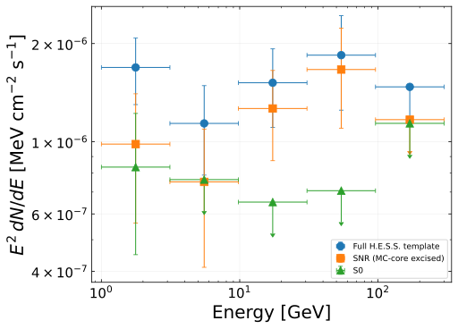
图注：16年LAT得到的区域谱能量分布，比较完整H.E.S.S.模板、剔除MC-core的SNR以及独立拟合S0。横向误差条表示能箱边界；TS≥4给通量，向下箭头表示95%置信上限。横轴为光子能量（GeV），纵轴为E²dN/dE（MeV cm⁻² s⁻¹）；蓝圆、橙方、绿三角分别对应完整模板、剔核SNR和S0。
怎么看这张图：比较低能端两套SNR谱与S0；只有最低箱测得S0，两套空间假设的谱不能直接相减作为云核独立谱。 空间拆分的能谱证据。
来源与置信度：arXiv HTML；source verified；https://arxiv.org/html/2611.31441v1/fermi_lat_seds_HESS_J1731-347.svg
图4
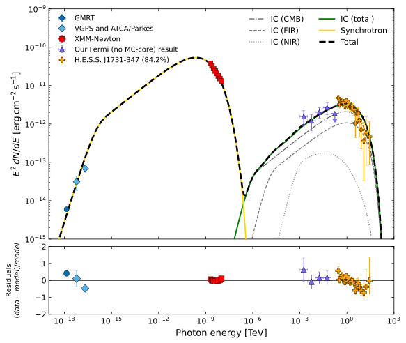
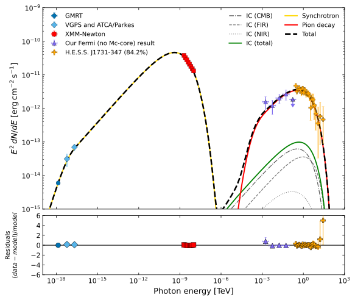
图注：剔除MC-core的基准宽波段谱能量分布。(a)纯轻子模型的同步与逆康普顿；(b)混合模型再加入质子碰撞π⁰衰变。显示CMB、远红外、近红外的各IC贡献及总和，下方面板为(F数据−F模型)/F模型。横轴为光子能量（TeV），纵轴为E²dN/dE（erg cm⁻² s⁻¹）；黑线为总谱、黄线同步、绿线总IC，混合面板红线为π⁰成分。
怎么看这张图：看强磁场怎样以较少电子维持同步并压低IC，再看π⁰如何改善伽马谱；最高H.E.S.S.点仍偏高。 核心辐射分解及残差。
来源与置信度：arXiv HTML；source verified；https://arxiv.org/html/2611.31441v1/SED_leptonic_ECPL_noMC_residuals_final.svg；https://arxiv.org/html/2611.31441v1/SED_leptohadronic_ECPL_noMC_residuals_final.svg
图8
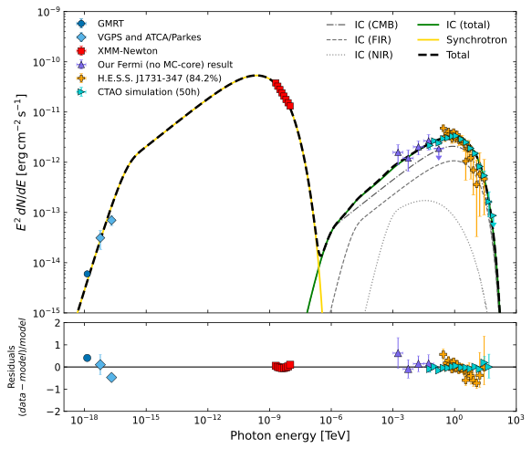
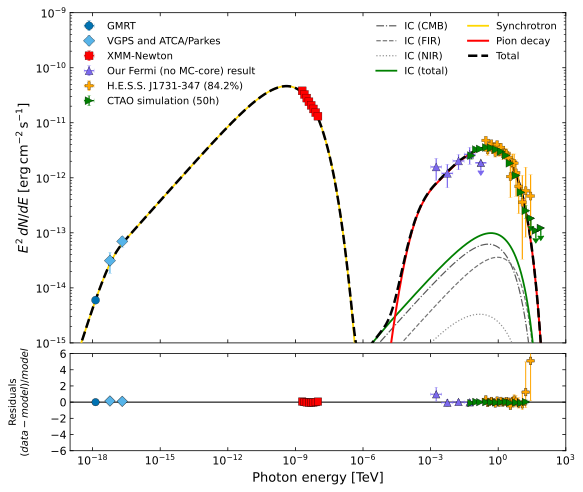
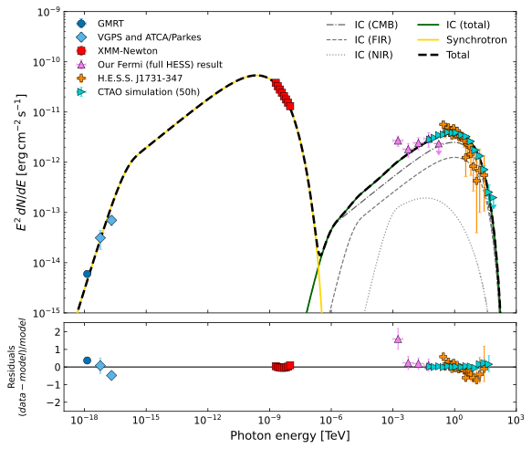
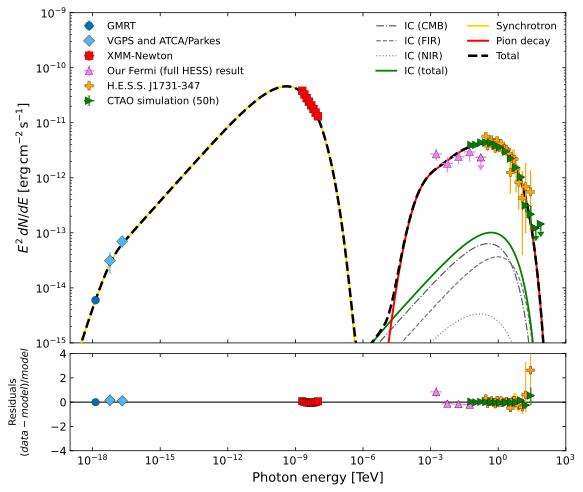
图注：HESS J1731−347宽波段谱能量分布，包含H.E.S.S.测量及CTAO南站50小时、20°天顶角模拟通量点。(a)、(b)为剔除MC-core的基准配置，使用缩放后的H.E.S.S.谱；(c)、(d)为完整模板，使用已发表H.E.S.S.点。每组分别展示纯轻子和轻子—强子方案；下方面板为各数据集的分数残差。横轴为光子能量（TeV），纵轴为E²dN/dE（erg cm⁻² s⁻¹）；CTAO模拟点在纯轻子面板为青色、混合面板为绿色，黑线为总模型。
怎么看这张图：四面板比较两种空间口径下固定最佳拟合模型与模拟谱点；CTAO点缩小误差，但未传播参数后验，不能据两条输入谱差异宣称普适机制判别。 图6在实际HTML中只有图注无图像，改选有四幅SVG的图8展示CTAO谱预报。
来源与置信度：arXiv HTML；source verified；https://arxiv.org/html/2611.31441v1/SED_leptonic_CTAO_noMC_residuals_final.svg；https://arxiv.org/html/2611.31441v1/SED_leptohadronic_CTAO_noMC_residuals_final.svg；https://arxiv.org/html/2611.31441v1/SED_leptonic_CTAO_full_residuals_final.svg；https://arxiv.org/html/2611.31441v1/SED_leptohadronic_CTAO_full_residuals_final.svg
强相关工作
Cui等2019年《Is the SNR HESS J1731-347 Colliding with Molecular Clouds?》（本文参考文献17）提出软S0/MC-core与较硬主遗迹分开，是挖核试验的直接基础。本文恢复这个趋势，但指数差仅1.2σ；新增结果是在指定宽波段框架中，去掉核心仍偏好强子。分歧涉及主壳层辐射解释，不能写成LAT独立发现两个粒子群。可沿原文该参考文献核对云核定义。
Guo等2018年《Detection of GeV Gamma-Ray Emission in the Direction of HESS J1731-347 with Fermi-LAT》（参考文献25）已有纯轻子和混合解释，混合解磁场约80—87 μG、质子指数约1.5—1.7，与本文接近。因此新意不是首次硬质子谱，而是16年LAT、空间一致性与统计排序。H.E.S.S.2011年壳层研究和2018年RX J1713.7−3946研究则说明，即使TeV谱更精确，也未必仅靠谱识别辐射粒子。
同一事件 / 同类源线索：
相似工作：
基础理论 / 方法工作：
（未提供）
相反观点 / 张力线索：
（未提供）
2. TeV Gamma-Ray Transparency Bounds on Neutrinos and Axions
- 来源：arXiv / astro-ph.HE
- 链接：https://arxiv.org/abs/2611.32905
- 作者：Shengyi Liu, Hyeonseok Seong, Chen Sun, Seokhoon Yun
- 公告 / 来源日期：2026-11-25
- 阅读层级：重点精读
- 评分：novelty 8/10，importance 8/10，relevance 10/10，final 9.70/10
- 推荐理由：TeV透明度映射辐射衰变粒子约束，直接联系伽马观测、中微子和轴子，须核验EBL与内禀谱假设。
中文题目：TeV宇宙透明度如何限制中微子与轴子衰变：残余背景光、粒子耗尽与条件排除
做了什么：如果中微子或轴子在宇宙历史中衰变产生光学、红外光子，它们会增加河外背景光（EBL），使TeV伽马射线更易经双光子成对产生被吸收。作者利用两类资料分别限制这种额外背景：基于268个甚高能谱、45个源重建的EBL减去星系积分光后的八个残余强度点，以及GRB 221009A在两个时段的13个约4—12 TeV LHAASO谱点。文章把衰变率、初始丰度与红移演化映射到背景强度和额外光学深度，给出活跃中微子跃迁矩、惰性中微子衰变宽度及轴子—光子耦合的条件排除区。
关键边界在补充材料：两套资料分别扫描，没有联合成一个统计量；LHAASO比较固定本征谱和传统EBL，残余EBL比较没有重新拟合原始TeV源谱。图中采用相对无衰变的Δχ²=3.84146阈值，未进行干扰参数重拟合或覆盖率校准。已知活跃中微子只对应发射光子能量不超过约0.025 eV，其排除主要来自残余EBL，LHAASO在物理端点并未达到阈值。
为什么重要：这项工作把“高能光子竟能抵达地球”的传播观测转化为“宇宙中不能额外积累多少软光子”的约束，再连接粒子寿命和耦合。它不需要假定TeV透明度异常，也不是用轴子转换来绕开吸收。方法能利用很小的衰变份额在宇宙时间上的累积，触及弱丰度粒子；但精确排除仍依赖本征谱、背景重建、初始丰度与冷母粒子假设，不能把图上的95%标签直接当作完整统计校准。
理论 / 观测 / 仪器方法价值：可复用的是从单色注入到红移展宽、母粒子耗尽、路径加权光学深度的完整前向模型。它把光子能量、粒子总衰变率和光子加权丰度分开，解释为何高衰变率不一定更易排除：粒子若早已耗尽，晚期相关波段反而缺光子。这套框架适合其他辐射衰变模型，但非相对论、自由传播及宇宙均匀近似须逐项检查；不能只按耦合平方缩放所有边界。
为什么应该关注：对IACT和LHAASO研究，源谱建模与传播系统误差会直接传到粒子物理结论，多源、跨红移的同步低能谱锚定比单个最高能光子更重要。对中微子研究，本文探测质量本征态间的辐射跃迁，与散射有效矩的组合不同，但普通活跃中微子仍受更强太阳、恒星限制，不能借“互补”宣称规避。下一步最值得做的是把衰变成分放进原始多源联合重拟合并校准条件阈值。
展开详细解读：文章讲解、背景、理论、重点章节、图表与相关工作
文章详细讲解
科学问题：星系的恒星光与尘埃再辐射构成EBL，TeV光子穿过它时可产生电子正电子对。已解析星系的积分光提供天体物理背景下限，而伽马吸收给总背景信息，两者之间的余量容许多少额外衰变光子？本文关注的是额外背景增加吸收，而不是新粒子帮助伽马光子逃避吸收，因此与常见轴子—光子转换的透明度异常解释方向相反。
作者怎么做：先对各向同性背景计算双光子成对产生的角度、能量、红移积分，再把非相对论母粒子的单色衰变通过宇宙红移展宽。用复合前或复合期定义的初始丰度和指数存活因子跟踪耗尽，分别预测今日残余强度与GRB路径上的额外光学深度。然后在粒子参数网格中与数字化资料比较，而不是从原始光子事件开始重新拟合所有源。
关键结果：残余EBL在特定正常质量排序跃迁上可比COBE/FIRAS给更低的跃迁矩排除带下边界，但仍弱于太阳、反应堆或恒星的通常限制。惰性中微子即便只占复合期暗物质的10⁻²、10⁻⁴或10⁻⁶也能被约束，且排除是闭合岛而非任意大宽度都排除。轴子按复合期占全部暗物质计算，在约10 eV质量附近具有竞争力；没有可脱离丰度前提的普适耦合数值。
局限与下一步：固定源谱的LHAASO检验没有释放谱硬化或背景参数；八个残余点采用独立误差近似，并未回到268个谱的原始联合似然。有限EBL基函数会平滑衰变谱端点，冷惰性中微子在低质量高丰度区还可能违反费米相空间要求。文章做了热运动与非均匀性诊断，却未完成全模型统计覆盖率校准，因此宜将成果理解为透明度探针的定量条件约束与可改进路线。
关键结果是怎么做出来的
首先建立背景余量。Gréaux等的多源EBL重建由268个VHE谱、45个源得到，部分观测有Fermi-LAT形状先验。本文拿其中八个已减星系积分光的数字化残余点及不对称误差，保留负中心值；衰变预测为非负，按以平均对数间距定义的能箱平均强度比较。未解析天体物理光若存在，会占用同一余量，使可分配给新物理的空间更小。
随后建立独立的GRB路径检验。GRB红移0.151，使用触发后230—300秒六点与300—900秒七点，能量约4—12 TeV。传统EBL取Saldana-Lopez模板并按LHAASO结果在小于8、8—28、大于28 μm分别乘1.30、1.20、0.40；其中心曲线和数字化本征谱固定。背景随红移只作光子红移与稀释近似，未额外加入持续星系发射。两时段χ²相加，但与残余EBL那套χ²不合并。
第三步把衰变放入传播。母粒子发射能量E*固定，今天某个光子能量选择对应的发射红移，母粒子数乘指数耗尽。只在寿命很长、耗尽可忽略时，信号才由丰度与宽度乘积决定。大宽度会提前清空母粒子并把光子红移出相关窗口，因此闭合排除区域有物理原因；不能把图3下边界延长为无条件上限。
活跃中微子结果必须限定物理横轴。正常排序ν3→ν2由大气质量平方差限定E*不超过约0.025 eV，图中更高能段属于更一般的粒子谱。补充材料热平均后LHAASO在物理端点最大Δχ²仍仅0.784，低于3.84146；蓝色残余EBL带才提供此区间限制。热运动使代表点边界改变量不足约0.5%，原因是被测EBL光子主要来自低红移慢速阶段，不代表所有早期中微子都非相对论。
惰性中微子以末态质量0.05 eV和辐射分支比1为基准，按复合期初始丰度作图。费米排斥给最低动量展宽：要求复合期费米动量与质量比≤0.1时，三个丰度对应质量差至少约1.35、0.393、0.090 eV。低于这些值并不等于观测排除，而是冷母粒子计算不自洽，需要含动量分布重算；全暗物质结构形成限制也不能不缩放就套到弱丰度成分。
最后检查模型表示能力。补充材料用八个非负高斯拟合两条衰变背景，完整响应区间面积重叠约0.748和0.791，尖锐端点存在泄漏，且所用示例网格与已发表解析基函数网格有偏移。非均匀性方面，平均光学深度仍线性于平均密度，平均透射却因凸性更透明；在长期自由传播形成大量重叠光子场的参数区间，该修正预计较小。两项都是适用性诊断，不能替代数据层面的系统误差传播。
参数边界的强弱最后要回到何种粒子群被假定存在。通用ξ在复合期指定光子加权共动丰度，不要求某种生产机制已被证明；轴子全暗物质和惰性成分的小份额只是各自切片。若初始丰度减小，长寿命区的宽度边界近似按丰度反比移动；但快衰变区因耗尽同时改变谱形，不能整体平移轮廓。原文图5的波纹和孤岛还部分来自八个顶帽能箱、不同残余及误差，而非新粒子相变或多个发现峰。
展开背景、理论、公式、模型和章节导读
背景知识
EBL是宇宙恒星和尘埃历年辐射累积形成的光学到红外背景，不同于起源更早、近乎黑体的微波背景。直接测EBL受前景扣除影响，星系计数则遗漏未解析成分，伽马吸收提供第三种沿路径的测量。三种方法的交叉比较能约束额外光子，但每一种仍有自己的选择与建模误差。
双光子成对产生有阈值且截面在阈值附近较大。更高能伽马光子能与更低能红外光子碰撞，所以多TeV观测探测的是一定范围内的软光子密度，而非所有波长的背景总能量。角度也重要：迎头相撞最有效，同向光子难以达到阈值，因此宿主附近的各向异性与宇宙平均背景不能完全等同。
伽马源本征谱本来就可能弯曲或截止。观测的软化可以来自源内加速、冷却，也可来自传播吸收，单源谱不易分开。多源不同红移共享EBL但各有源谱，再用未强吸收的GeV谱约束形状，可减少退化；然而把既有最佳本征曲线固定后的条件检验，仍比完整重拟合更强依赖这些既有推断。
粒子辐射衰变能把极微弱速率积累成宇宙背景。两体衰变在静止系产生线状光子，宇宙膨胀让不同时代的光子落到不同能量，因此最终不是一条窄谱线。母粒子若衰变很快会耗尽，且早期光子被红移到更低能，解释了耦合增大并不总意味着本文能段的吸收持续增大。
GRB 221009A的高能光子特别引人关注，但“超出某个吸收预期”不自动等于标准物理失效：推断依赖所选EBL光谱和伽马爆发本征发射。本文明确把该事件当作更新背景余量的测量，而非预先认定异常后寻找逃逸机制。这样可以把多个互不等价的问题分开：源究竟发多硬、传统背景有多高、新粒子增加多少光子，各自都需要数据或先验支持，不能用一个高能事件同时确定全部未知量。
基础理论 / 方法脉络
光学深度是沿光路累积的相互作用期望数，透射因子是指数。密度、截面和路径长构成无量纲量，但密度必须是相互作用红移处的本征体积密度，能量也必须用当地能量。论文把观测伽马能量记为EUV，把当地背景能量记为EIR；若混用今日能量与当地能量，会重复或漏掉红移因子。
宇宙衰变的关键映射是某个当地光子能量对应唯一发射红移。发射时间对能量的雅可比产生1/[EH(z*)]，共动母粒子数转到当地本征光子密度再乘(1+z)³。该公式同时保持单色端点和母粒子耗尽；只用今日残余密度再简单乘距离不能准确代表沿途吸收。
模型可压缩为发射能量、总衰变率和光子加权丰度ξ。ξ包含每次光子数、辐射分支比与复合期共动数量，既不是今日存活数量，也不是暗物质质量份额。固定能量与总宽度时背景强度和额外光学深度随ξ线性，但透射通量与χ²不线性；耗尽重要时宽度还改变谱形，无法完全吸收进ξ。
中微子跃迁算符以质量本征态间磁、电跃迁矩控制宽度；轴子则由双光子耦合和质量立方决定宽度。不同实验可测不同有效组合，但对普通活跃跃迁，太阳非相干混合和恒星冷却仍给强约束。互补的真正含义是观测不同能量、时代与过程，不是仅凭基底不同就能绕过既有限制。
轴子相关吸收有两种不同路径。直接由TeV光子碰上轴子产生电子对，需要很小的轴子耦合截面；本文则让轴子先衰变成真实背景光子，这些光子可以传播很久并积累，之后以普通量子电动力学的双光子截面吸收TeV光子。补充V在1 eV轴子、10 TeV光子和长寿命基准下给出两步过程相对直接过程约10¹⁸量级增强。这个数值只用于说明为何研究衰变背景更有效，不是任意质量、寿命下都成立的普适增强因子。
公式与推导
原文采用自然单位。先从当地碰撞运动学出发：
$E_\gamma$是今日伽马能量，$\epsilon$是当地背景能量，$\mu$为夹角余弦。光学深度为
路径因子是自然单位中的本征长度，角因子含相对通量与各向同性平均。密度与截面相乘再积分得到无量纲$\tau$，继而
新物理密度非负，使额外光深非负；上式也说明源谱上扬可部分抵消吸收，因此源谱是干扰量。对静止母粒子单色发射，
于是共动母粒子密度$n_{X,c}$给当地谱：
$n_{X,c}$已包含耗尽并在设定历史之外为零。把它转为强度，及写出存活：
恢复普通单位时强度式右侧乘$c$。两个能量因子分别完成数目到能量、线性能箱到对数能箱的转换。中微子两体跃迁给
$\mu_{\rm eff}^2=|\mu_{ij}|^2+|\epsilon_{ij}|^2$，式中电跃迁矩符号$\epsilon_{ij}$勿与光子能量混淆。轴子映射则为
两种机制通过不同质量—能量—宽度关系进入相同传播积分。固定背景下最终统计为
上下误差按预测偏离方向选取，数值阈值3.84146没有经本文覆盖率校准。长寿命极限指数耗尽近1，才可用教学标度$\tau_{\rm NP}\propto\xi\Gamma$；快衰变时必须保留前述积分，闭合排除区正由此出现。
模型拟合 / 应用方法
这项工作需要区别继承的EBL重建与本文实际扫描。原重建同时拟合多源本征谱，采用平滑对数抛物线加指数截止，64次观测有同期LAT的指数—曲率相关先验，归一化仍自由以允许变源。本文使用其重建后残余点，没有再拟合原始268个谱。因此原方法的源谱边缘化不能直接视为本文每个新物理参数点都做过同样边缘化。
残余EBL扫描把预测衰变强度在八个能箱内平均，用数字化残余及不对称误差作χ²，负残余中心值保留。误差被当作独立，既有EBL重建中的相关性未在此重新处理。有限基函数对锐利衰变端点的覆盖检验有助理解分辨率，但面积重叠0.748、0.791不是统计拟合优度，也不能自动证明无偏排除。
LHAASO扫描使用两时段共13点，线性插值数字化本征曲线，传统EBL与本征谱都固定。总χ²只在两个时段相加，蓝色与紫色轮廓分别来自不同资料，并无联合收益。参数特定图还掩掉不满足Γ[t(1100)−t(10⁷)]≤1的区域；这些不是被观测排除。通用ξ扫描不施加这个寿命切，因此读图必须对应实际设定。
原文把Δχ²=3.84146称作名义95%阈值，并明确通用扫描没有干扰重拟合或置信校准。非负信号边界、封闭或断裂区域、两维网格与相对固定零信号参考都使简单χ²阈值的解释需要谨慎。可行改进是直接以衰变光深加入源谱联合似然，释放EBL和本征谱参数，用模拟校准覆盖；本文没有给出这项完整再分析，不能将其写为已经完成。
非均匀性和热运动诊断也应放在正确层次。光子自由传播数亿年至数十亿年后，来自许多源的辐射场重叠，平均背景近似通常比把所有光子束缚在单个星系小球内合理。作者的极端球模型说明有效透射可对密度涨落敏感，又估计长期传播会大幅压低这种效应；这不是用真实大尺度结构重建每条视线。类似地，活跃中微子的热平均检验适用于标准遗迹动量分布和所选跃迁，不能移植到更热、非热或不同质量的惰性族群。
重点章节 / 结果段落怎么读
-
正文II与补充I：先核对观测能量、当地能量、本征密度及路径长度，保证红移因子一致，再理解TeV能量选择哪些红外光子。
-
正文III与补充II：对照原多源重建中的源谱边缘化和本文固定曲线扫描，明确数据继承与实际再拟合的界线。
-
正文IV与图2—4：把横轴发射能量映射到真实质量范围，分别记录初始丰度、分支比和排除区域形状；不要读成一个普适耦合上限。
-
补充III及图5：追踪ξ与Γ为何仅在长寿命极限退化，理解高宽度边界来自母粒子耗尽，掩膜与观测排除也要分清。
-
补充IV与表1、3：查冷费米母粒子的适用域和活跃中微子热运动核查，尤其确认LHAASO在已知活跃范围内未越阈值。
-
补充V—VI：区分轴子直接吸收与衰变后QED吸收，以及跃迁矩、散射有效矩的关系，避免把互补解释成更强实验限制失效。
关键图表与解读
图2
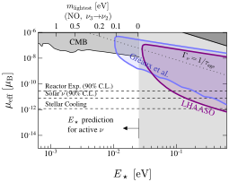
图注：有效中微子跃迁矩对静止系光子能量E的排除图，原文标称95%。上轴为正常排序ν3→ν2对应最轻质量；紫色为LHAASO、蓝色为Gréaux等残余EBL。已知活跃中微子要求E≤0.025 eV，更高能量属一般谱。虚线为GEMMA、太阳中微子与恒星冷却比较，灰色为CMB。横轴E*单位eV，纵轴跃迁矩以玻尔磁子μB为单位。
怎么看这张图：先以0.025 eV划出已知活跃中微子的物理范围，再区分蓝色残余EBL与紫色LHAASO。补充材料表明紫色在物理端点并未达到阈值，不能把高能延伸当作普通活跃中微子限制。 核心跃迁矩结论及其物理边界。
来源与置信度：arXiv HTML；source verified；https://arxiv.org/html/2611.32905v1/fig_nu_constraints.svg
图3
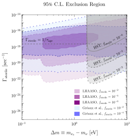
图注：惰性中微子辐射宽度对质量差的排除图，原文标称95%。紫色为LHAASO、蓝色为残余EBL，仅封闭阴影区域排除。图例份额定义于复合期；末态质量0.05 eV，辐射分支比为1。灰线为HST宇宙光学背景各向异性限制。横轴质量差Δm以eV计，纵轴辐射宽度以s⁻¹计；不同深浅表示不同初始份额。
怎么看这张图：只有闭合阴影被排除，高宽度处可能因母粒子耗尽而重新允许；复合期冷母粒子相空间适用域还应另查表1。 展示丰度和耗尽导致的非单调约束。
来源与置信度：arXiv HTML；source verified；https://arxiv.org/html/2611.32905v1/fig_sterile_constraints_v2.svg
图4
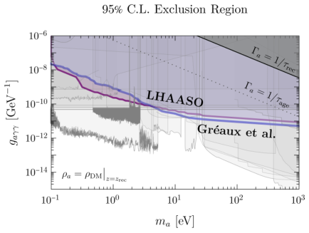
图注：轴子—光子耦合的排除区域，原文标称95%，边界以上区域排除；紫色为LHAASO，蓝色为残余EBL，灰色为已有约束。灰色比较保留各原文丰度和置信约定；本文轴子在复合期初始占全部暗物质。横轴轴子质量ma以eV计，纵轴耦合以GeV⁻¹计；图内另标复合时刻与宇宙年龄倒数对应寿命线。
怎么看这张图：本文轴子初始丰度取复合期全部暗物质，灰色比较沿用各文献的丰度和置信约定；不应直接按轮廓高低宣称所有质量上最强。名义阈值也不是重拟合后校准置信区。 轴子结果与丰度依赖。
来源与置信度：arXiv HTML；source verified；https://arxiv.org/html/2611.32905v1/fig_axion_constraints_smaller.png
强相关工作
Gréaux、Biteau与Nievas Rosillo的2024年《The cosmological optical convergence: extragalactic background light from TeV gamma rays》（arXiv:2410.07011）是八个残余点及多源谱框架的直接来源；Cao等LHAASO的2023年GRB 221009A高于10 TeV结果（arXiv:2310.08845）提供独立的高能路径信息。本文不是新的伽马探测，而是在这些既有结果上加上衰变光子前向模型；两条数据线也没有在本文组成联合统计。
Bernal等2023年《Seeking dark matter with gamma-ray attenuation》（arXiv:2208.13794）已提出利用衰变背景增强伽马吸收限制暗物质。本文扩展到中微子质量态跃迁与弱丰度惰性成分，并更新EBL资料及耗尽检查。常见GRB轴子转换解释则让光子绕过吸收，本文讨论的是轴子双光子衰变增加吸收，二者机制与参数假设不能混为一谈；补充VI也明确更强太阳和恒星限制不能单凭有效矩组合不同而消除。
同一事件 / 同类源线索：
相似工作：
基础理论 / 方法工作：
相反观点 / 张力线索：
（未提供）
3. Phase-Resolved X-ray Polarimetry of LMC X-1: Enhanced Polarization at Inferior Conjunction
- 来源：arXiv / astro-ph.HE
- 链接：https://arxiv.org/abs/2611.31824
- 作者：Yu-Shan Ling, Fei Xie, Alessandro Di Marco, Fabio La Monaca
- 公告 / 来源日期：2026-11-25
- 阅读层级：重点精读
- 评分：novelty 8/10，importance 8/10，relevance 9/10，final 9.35/10
- 推荐理由：相位分辨偏振提供LMC X-1几何新约束，须核查分箱试验和两偏振分量模型退化。
中文题目：LMC X-1的低平均偏振隐藏了什么：轨道相位分辨软X射线偏振与几何解释
做了什么：作者重新分析2022年10月的IXPE、NICER与NuSTAR资料，在已知3.90917天轨道周期上研究LMC X-1偏振。IXPE每探测单元约562 ks、覆盖两个以上轨道；整个观测的2—8 keV偏振度仅0.8±0.4%，低于99%最小可探测偏振1.2%，但作者指定的φ∈[−0.1,0.1]低通量区间中，2—3 keV偏振度达到4.2±1.1%、偏振角46±8°，2—8 keV为3.4±0.8%、50±7°。其余相位合并后的偏振不显著。因而平均低偏振不能直接排除轨道相关的偏振变化。
Q/I、U/I在固定轨道周期的余弦模型下比常数更好，软能段和全能段报告F检验p=0.0016、0.0004，3—8 keV则p≈0.17。作者讨论近正交的盘与盘上散射分量随吸收改变混合，以及磁化介质法拉第旋转，后一方案在视线光学深度取1时给90%条件上限|BLoS|<9.7×10⁶ G。本文未唯一识别偏振机制，且相位命名、相位偏置表述存在内部不一致，解读以明确分箱和Stokes表为准。
为什么重要：黑洞高软态通常由热盘辐射主导，低倾角系统的标准散射盘预期偏振较小。本文在同一资料中发现特定相位软偏振增强，并且偏振角接近电离锥投影方向，为盘上散射、伴星风和视线遮挡提供了新的诊断维度。价值在于揭示平均Stokes矢量可能抵消的信息，而不是宣布直接测得磁场或证明喷流；信号持续性仍需更多轨道验证。
理论 / 观测 / 仪器方法价值：可借鉴的是先在Q、U线性变量中做时间和相位分析，再用联合能谱确定各分量光子份额，最后讨论偏振稀释和几何。这样能避免直接拟合正定偏振度造成的直觉偏差，也能发现“盘主导强度”不等于“盘独占偏振”的退化。对任何轨道调制分析，已知历表、分箱、能段选择、重复周期和同步宽波段覆盖都应作为证据的一部分。
为什么应该关注：对高能双星研究，这篇文章连接供能盘、热冕、伴星风与外流几何，而不是直接提供TeV或中微子预报。读者可关注软通量最低时Stokes矢量如何变化，以及是否与吸收柱同步；真正能区分两分量混合和磁化传播的，是多轨道的相位分辨谱偏振及其能量依赖。不能仅凭偏振角与电离锥一致就宣布喷流辐射起源，也不能将磁场条件上限用作所有盘区的测量。
展开详细解读：文章讲解、背景、理论、重点章节、图表与相关工作
文章详细讲解
科学问题：LMC X-1长期在高软态，热盘贡献大，既往IXPE整体偏振低。若轨道上不同方向的偏振矢量改变权重，整段观测相加时可能抵消，平均结果便掩盖几何信息。作者据既有轨道周期切分2022年观测，问软X射线是否在低通量的特定相位增强偏振，并据其角度推测盘和散射介质的位置关系。
作者怎么做：IXPE用90角秒源区与150—240角秒背景环，PCUBE提取非加权模型无关偏振，另以加权Stokes谱进行拟合。NICER约25 ks、NuSTAR约19 ks提供同时能谱，但NuSTAR只覆盖作者指定合位置附近，因此其他相位没有同等宽波段谱约束。时间箱约0.2轨道，另做五箱相位折叠；主要比较2—3、3—8、2—8 keV的Q/I和U/I余弦与常数模型。
关键结果：软和全能段余弦拟合改善显著于作者采用的常数检验，硬能段并无强偏好。φ∈[−0.1,0.1]的软偏振4.2±1.1%高于该箱MDP99=3.4%，角度46±8°接近电离锥约45°；全轨道平均低偏振与此并不矛盾。联合谱中热盘占2—8 keV约90%、软能段95%，说明软信号主要出现在盘占优能区，但分量偏振拟合的χ²没有给盘、冕方案明确统计优劣。
局限与下一步：只覆盖两个多轨道，三个能段并非独立，文中p值不是全部分箱和模型选择后的全局周期发现率。线性能量偏振模型较常数没有显著改善，磁场上限还依赖有序视线场与光学深度。原文把φ=0称作黑洞inferior conjunction，却又描述源在更密伴星风后方，并在另一处把φ=0.22称作相同位置；不能据这些称谓自行画出唯一遮挡几何。更多周期、明确历表与相位分辨吸收谱是最直接的检验。
关键结果是怎么做出来的
第一步确认观测状态与采样。IXPE在2022-10-19至28覆盖两个以上周期，每个DU约562 ks；NICER十次总约25 ks，NuSTAR仅10月24日约19 ks。NuSTAR历史六次观测的硬度—强度图显示源长期高软，2022年点不异常。这个状态稳定性支持比较同一类吸积态，但并不弥补本次其他相位缺少NuSTAR覆盖的问题。
第二步复现整体测量。新版响应和软件得到2—8 keV PD=0.8±0.4%，MDP99=1.2%，与既往1.0±0.4%结果相容。作者随后用0.2轨道宽度时间箱追踪Q/I、U/I，软段余弦χ²/自由度14/19，对常数31/22；全能段15/19对39/22；硬段16/19对21/22。这些是已知周期的模型比较，并不是自由频率搜索发现新周期。
第三步用折叠资料交叉检查。附录A的五个相位箱给软段常数23/8、余弦7/5，全能段28/8、5/5，硬段6/8、1.3/5仍不足以强制需要调制。折叠光变下降约6.3%，与既往约7%轨道调制接近。时间域和折叠域分析复用同一光子，属于表示方式的一致性检查，不能视为两次独立发现。
第四步量化特定窗口。表3和表6在φ∈[−0.1,0.1]给软段Q/I=−0.1±1.1%、U/I=4.2±1.1%，对应PD=4.2±1.1%、PA=46±8°；全段Q/I=−0.5±0.8%、U/I=3.4±0.8%。其余相位合并的PD上限在软、硬、全段分别<0.9%、<1.2%、<0.6%（90%）。平均抵消可解释这些值，但MDP是无偏振假设下阈值，不是各PD误差或机制概率。
第五步检查谱和稀释。联合模型MBPO×TBABS×(KERRBB+NTHCOMP+GAUSS)得到χ²/自由度1239/1096；2—8 keV总通量3.739×10⁻¹⁰ erg cm⁻² s⁻¹，盘3.364、冕0.350、线0.025（同单位尺度）。软段盘占95%，硬段86%。将全部偏振归冕需要软段51±20%、全段25±8%的较大本征偏振，且参数弱约束；归盘得到更合理的小百分比，但各方案χ²近似相同，不能写成统计排除冕。
第六步才是从信号走向解释。余弦参数给软段调制矢量振幅约3.2±0.8%，常数偏振分量仅约0.5±0.5%，表明稳定分量方向约束弱。作者用偏振角差和振幅两条途径得到视线有序磁场90%上限9.7×10⁶ G，但共享同一Stokes数据、代表能量和光学深度假设，因此不能当作两个独立磁场结果相互确认。更关键的是，法拉第旋转只能改变已有矢量，无法独自提高到全部观测PD；作者必须再引入偏振成分，故最后仍是待检验框架而非唯一机制。
展开背景、理论、公式、模型和章节导读
背景知识
LMC X-1位于约50 kpc的大麦哲伦云，是黑洞与大质量O型伴星组成的双星。文献动力学质量约10.9±1.4个太阳质量，伴星约32±3个太阳质量，倾角36.4±1.9°。这些参数使它成为热盘研究的重要对象，但自旋和盘结构仍有模型依赖，本文将自旋等固定并未重新测量它们。
高软态通常由光学厚热盘占据软X射线强度，热电子冕通过康普顿散射产生较弱高能尾部，铁线提示反射。强度谱可以说明能量分配，却对几何不够敏感；线性偏振携带散射平面和视线方向信息，因此加入Q、U能约束强度谱难区分的结构。
在平面散射盘模型中，偏振随倾角改变，低倾角观察到的净偏振较小，文中援引本源倾角下约1.3%的标准值。若光在盘上方光学薄介质中被再散射，偏振方向可与直接盘的方向近正交。两类辐射相加不是把偏振百分比直接求和，而是先加Stokes矢量，这允许明显偏振的分量在平均后相互抵消。
伴星风会吸收软光子并散射X射线，轨道改变视线穿过气体的路径。若直接盘和高处散射区受吸收不同，低通量相位反而可能有更高偏振比例。因此PD升高不必表示偏振光绝对亮度增加，也可能是未偏振或正交偏振分量被削弱；这正是需要相位分辨强度谱共同验证的原因。
偏振的最小可探测阈值MDP回答的是在给定计数、背景和仪器调制能力下，零偏振信号有多大概率被涨落成某个幅度。它不是一个源的偏振度上限，也不是测得值加减误差的另一种写法。本文整体PD低于整体MDP，而某相位箱PD超过该箱MDP，两者因曝光和信号不同完全可以同时成立。对于低PD的其余相位，应保留表中置信水平明确的上限，不能说那些相位物理上完全无偏振。
基础理论 / 方法脉络
线性偏振用归一化Stokes量q=Q/I、u=U/I最直接表示。偏振角通过双角进入q、u，因此相差90°的两个方向在Q—U平面正好相反。把多时段先相加再计算PD，与把各时段PD取平均不是同一运算；本文整体低PD而局部窗口较高，首先应在这种矢量代数下理解。
PCUBE从光电子方位分布估计Stokes量，报告相位窗口的模型无关结果；谱偏振拟合则把仪器响应、能谱分量与偏振模型组合。两者使用权重及模型约束不同，数值可以不同，不能把PCUBE软段4.2%与POLCONST软段3.0%拼成同一估计。本文同时给出二者，是一致性与模型依赖检查而非重复样本。
恒定PD和线性随能量PD是现象学描述。原文POLLIN较POLCONST的F检验p=26%，不支持增加两个能量斜率参数，因此软段信号更强只应称趋势，不能据拟合负斜率宣称复杂能量规律已测定。盘和冕的偏振也退化：弱通量分量若独占净偏振，需要更大本征PD，这可影响物理合理性，却不自动形成统计模型排除。
法拉第旋转是在磁化等离子体中旋转已有线偏振的方向，不能凭空创造无偏振光的净线偏振。其旋转随视线磁场、散射光学深度和E⁻²变化；不均匀旋转与遮挡破坏对称后可改变净矢量。作者也明确该机制单独解释不了较大PD，需要额外偏振分量，所以磁场上限是一个解释框架内的结果。
两分量方案的可检验内容比“有风、有散射”更具体：高处光学薄散射区的偏振方向近盘法线，直接厚盘方向与其正交；如果伴星风更强吸收直接盘，净矢量会向高处散射分量偏转，且软能段效果更强。这个解释要求两区域受吸收的差别，而不只是总吸收柱变大。本文没有给出相位分辨风密度、覆盖因子和完整散射传输联合拟合，因此它提供物理图像与下一步预测，尚不是由数据唯一反演得到的三维结构。
公式与推导
先给出用于理解原文的标准Stokes关系，再连接作者的余弦与法拉第参数化。令$q=Q/I$、$u=U/I$，则
$P$用无量纲比例，$\psi$是偏振角并有180°简并。低信噪下$P$正定而有偏，故周期分析先在$q,u$进行更清楚。多个分量按强度加权：
这是教学关系，不是本文另行拟合的完整辐射转移。若两个方向正交，$\psi_2=\psi_1+90^\circ$，便得到
此式解释吸收改变相对份额时PD为何升高或抵消，但不证明本文已测得两个独立区域。若只盘偏振、其余完全无偏振，才简化为原文采用的稀释式：
不能把这一标量式直接用于两个均偏振且方向不同的分量。时间变化的原文参数化为
轨道周期固定3.90917天；$A_Q,A_U,C_Q,C_U$无量纲。原文对$\phi_0$是否固定及表7单位有不一致，因此不据表中偏置重建绝对合位置。作者定义调制矢量尺度
软段给约3.2±0.8%，这是拟合矢量振幅，不等于全轨道每相位PD的同一常数。其法拉第关系为
$E$采用计数加权代表能量，软、硬段为2.38、3.55 keV；文中固定$\tau_{\rm LoS}=1$。由此反解
可见磁场上限随未知光学深度反比缩放。作者另用
联系调制振幅和旋转，得到同量级90%上限。两条估计共享数据与框架，并非独立磁场观测；更不能把此上限当作整个盘总场或湍动场强度。
模型拟合 / 应用方法
强度谱只在作者选取合位置窗口联合拟合。NICER用1—10 keV、NuSTAR用3—40 keV、IXPE用2—8 keV；KERRBB的自旋0.92、倾角36.4°、质量10.9太阳质量、距离50 kpc、色修正1.7等固定，电子温度固定100 keV，铁线能量固定6.4 keV。自由吸收柱得0.714±0.003×10²² cm⁻²，吸积率1.57±0.02×10¹⁸ g s⁻¹，冕光子指数2.67±0.05；这些误差条件于固定盘结构与校准。
MBPO乘法校准模型对NICER和NuSTAR退化为常数，FPMA归一化固定1；IXPE三个DU允许折断幂律形状修正，折点约2.6、2.9、3.2 keV，高能指数偏移约−0.35至−0.43。软硬分界恰在约3 keV，解释能量依赖时必须记住仪器间形状校准参与拟合，不能称两能段差异已完全脱离校准系统误差。
谱偏振阶段把强度谱参数冻结，仅放开偏振参数，铁高斯线设无偏振。整体POLLIN给χ²/自由度584/523，POLCONST为587/525，改善不显著。只盘偏振、只冕偏振及两者均自由时χ²近似，原文3.3明确无统计偏好；结论段“识别盘起源、排斥冕”的措辞强于该结果，本稿保留物理上盘解释较自然而机制未定的表述。
还需区分原文数值不一致。表3软段PCUBE为4.2±1.1%，稀释段却采用4.4±1.2%再除0.95；本文不合并成新测量。正文称相位偏置固定但表2给误差，附录表7偏置约2.4而式中仍写周期相位，没有清楚说明弧度或单位转换。读者可依据表3/6明确窗口与Stokes数据检验信号，绝对几何和精确稀释数值则应等待作者澄清。
周期稳健性可进一步按独立轨道分别估计q、u，检查同一相位是否重复，并改变时间箱边界、提取区域及能段后用模拟计算整体试验因子。对能量依赖，应在固定响应系统误差模型下同时拟合全部能道，而不是把相关软、硬、全能段的p值相乘。对风遮挡，应加入其他相位的同步NuSTAR或相当宽波段数据，追踪吸收柱、盘归一化和冕份额是否同步变化。这些是本稿提出的检验路径，不能写成本文已经完成的稳健性测试。
重点章节 / 结果段落怎么读
-
第2节和图1：先看三仪器覆盖，确认只有所选窗口有NuSTAR；这决定其他相位能谱机制不能同等约束。
-
第3.1节、表1—3与图3：从Q/I、U/I拟合而非PD曲线判断调制，分别记录软、硬、全段p值和MDP，不把相关能段当独立重复证据。
-
附录A的表6及图5：以φ∈[−0.1,0.1]为可复核窗口，比较折叠与时间域结果；相位偏置数字的内部差异另标注，不据其推导唯一合位置。
-
第3.2—3.3节、表4—5及附录B：先核对强度份额和固定参数，再读盘/冕偏振的χ²，理解弱冕为何需要大本征PD以及校准的作用。
-
第4.1—4.2节：用Stokes矢量相加理解两分量抵消，再读E⁻²法拉第关系；将额外分量和光学深度前提一起带入磁场上限。
关键图表与解读
图3
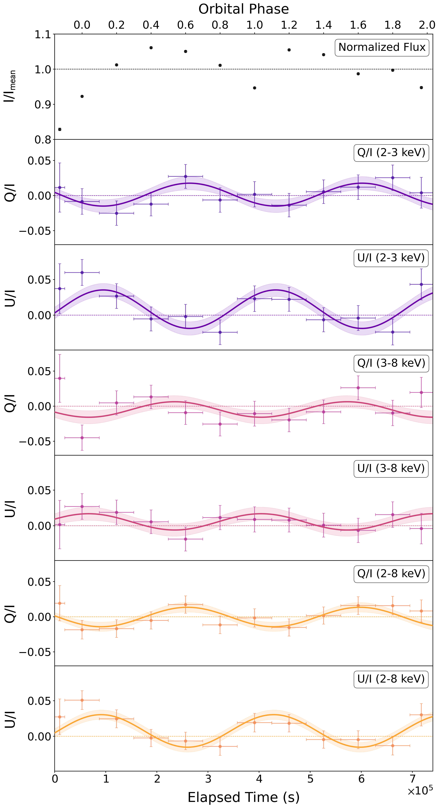
图注：从上到下为2—8 keV归一化通量，以及2—3、3—8、2—8 keV的Q/I和U/I随时间变化。除首末箱外，时间箱宽为0.2个轨道周期；误差为68%置信水平。实线为最佳拟合，阴影为68%允许带。下横轴为经过时间（秒），上横轴为轨道相位；归一化通量、Q/I、U/I均无量纲，软、硬、全能段依次用紫、粉、橙色表示。
怎么看这张图：先沿软段Q/I、U/I观察相同周期的变化，再看硬段误差与弱调制；余弦与常数的统计比较要回表2，单凭拟合带不能当作全局周期发现。 直接展示时间域Stokes调制证据。
来源与置信度：arXiv HTML；source verified；https://arxiv.org/html/2611.31824v1/Fig_QU_vs_time.png
图5
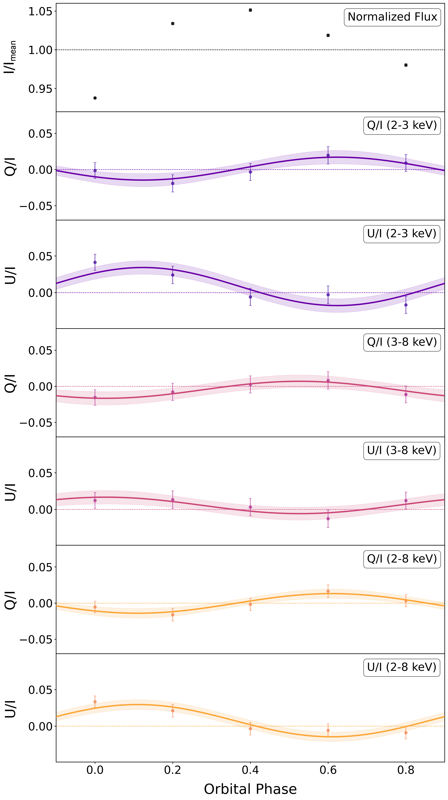
图注：相位折叠的2—8 keV归一化光变，以及2—3、3—8、2—8 keV的Q/I、U/I。各箱宽为0.2轨道相位，误差为68%置信水平；彩色曲线为周期固定3.90917天的余弦拟合。横轴为轨道相位，纵轴归一化通量、Q/I和U/I均无量纲；软、硬、全能段依次用紫、粉、橙色表示。
怎么看这张图：以φ∈[−0.1,0.1]窗口对照表6的软段U/I增强和通量降低；这是与图3相同光子重新折叠，不是独立重复检测。原文偏置参数和合位置命名不一致，图读法保持实际分箱。 明确轨道分箱和平均抵消的核心展示。
来源与置信度：arXiv HTML；source verified；https://arxiv.org/html/2611.31824v1/Fig_Folded_QU_vs_time.png
图4
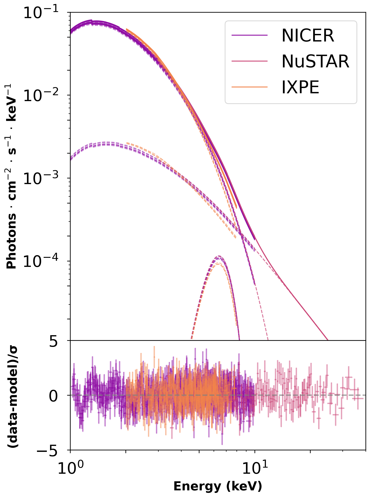
图注：作者指定合位置区间内的LMC X-1 X射线能谱。上排展示各探测器的总模型及分量分解，下排给出以σ为单位的残差。横轴为能量（keV），上排纵轴为光子谱通量（photons cm⁻² s⁻¹ keV⁻¹）；紫、粉、橙分别表示NICER、NuSTAR、IXPE，各自实线和虚线显示总模型与分量。
怎么看这张图：盘占据软能段和大部分总强度，冕较弱；这解释只冕偏振模型为何需要大PD，但强度份额本身不能证明偏振只来自盘。下排残差与附录MBPO校准应一起核对。 支撑盘冕份额与偏振稀释讨论。
来源与置信度：arXiv HTML；source verified；https://arxiv.org/html/2611.31824v1/Fig_Spectra.png
强相关工作
Podgorný等2023年的首次LMC X-1 IXPE研究（MNRAS 526, 5964，DOI:10.1093/mnras/stad3103）使用同一2022年观测，报告低平均偏振并已有相位变化迹象。本文是更深入的相位重分析而非新增观测曝光，因此两篇结果不能作为独立样本合并显著性。Orosz等2009年的动力学模型（arXiv:0810.3447）提供轨道周期、历表与倾角，是相位定义和盘条件的直接基础。
Cooke等2008年的电离锥研究（arXiv:0809.2140）提供约45°投影轴向，本文PA接近该方向是几何线索，但电离锥轴等同即时喷流或内盘法线仍是假设。Barnier与Done2024年磁化吸积流偏振工作（arXiv:2404.12815）提供法拉第解释的物理框架；本文将其用于视线磁场条件上限，却没有完整偏振辐射转移拟合，故不能以此唯一决定外流、盘或冕的位置。
同一事件 / 同类源线索：
相似工作：
基础理论 / 方法工作：
相反观点 / 张力线索：
（未提供）
4. Tidally Induced Coda: Double Transients from Black Hole-Star Binary Encounters with Massive Black Holes
- 来源：arXiv / astro-ph.HE
- 链接：https://arxiv.org/abs/2611.31361
- 作者：Konstantinos Kritos, Rosalba Perna
- 公告 / 来源日期：2026-11-25
- 阅读层级：重点精读
- 评分：novelty 8/10，importance 8/10，relevance 8/10，final 9.00/10
- 推荐理由：少体散射建立双耀发时延和微潮汐瓦解截面，为核区暂现源提供可检验预言；率依赖族群假设。
中文题目：大黑洞的一次潮汐掠过，如何让恒星级黑洞和大黑洞先后亮起
做了什么：作者研究一种不同于普通潮汐瓦解的双重暂现源通道：恒星级黑洞与恒星组成的双星掠过大质量黑洞，外部潮汐先提高内双星偏心率，使恒星被自己的黑洞伴星撕碎；一部分碎片随后被中心大黑洞束缚，延迟回落并形成第二次供料。论文用SpaceHub开展31,122,000次少体散射，固定内双星为10太阳质量黑洞和1太阳质量、1太阳半径恒星，系统改变中心质量、双星半长轴、偏心率和入射速度，标定结局分支、微潮汐瓦解截面及双峰时差。
一个中心质量为百万太阳质量的代表算例中，约12%碎片最终束缚于恒星级黑洞、8%束缚于中心黑洞，后者回落峰约在50天；用于大参数扫描的冻结能量近似则给约120天。双峰延迟因此只是近似预测，不能视为精确光变曲线。采用黑洞—恒星双星比例$10^{-4}$等核星团假设，模型预测光度距离约40 Gpc内每年几例至约100例本征双重事件；这个数没有乘入巡天选择函数，也不是实际可探测数量。
为什么重要：微潮汐瓦解由恒星级致密天体完成，单独出现时很难仅凭一次耀发识别；延迟出现的中心大黑洞回落提供了一种有物理关联的双事件指纹。本文把单次双曲线遭遇、动力学触发、碎片归属、延迟标度和损失锥率连接起来，给出了可用于群体计算的拟合。推进主要在动力学发生率与时标，辐射转移、吸积效率和双峰是否能被可靠识别尚待流体模拟与观测检验。
理论 / 观测 / 仪器方法价值：方法上可复用的是以均匀时间相位采样和引力聚焦截面构造散射库，再用一个直接碎片积分算例检查大规模统计采用的快速近似。附录把微瓦解发生率压缩为临界穿透参数，把延迟压缩为中心质量和双星尺度的二次拟合，并报告散布、残差与失效区。它适合作为核星团瞬变种群模型的输入，但必须保留固定恒星性质、双星比例和冻结近似偏差。
为什么应该关注：第一峰可能涉及快速X射线或紫外辐射，某些情形可能伴随伽马暴，第二峰则可能更像缓慢的光学/紫外潮汐瓦解；这让高能触发与长期光学随访具有明确互补性。论文未计算喷流、非热粒子或中微子产额，不能把可能的伽马暴联系升级为多信使预言。值得关注的是同一天区的快慢双峰能否同时限制核星团中黑洞—恒星双星的比例、聚集程度及中心黑洞质量。
展开详细解读：文章讲解、背景、理论、重点章节、图表与相关工作
文章详细讲解
科学问题首先是通道识别。普通潮汐瓦解中大黑洞直接撕碎恒星；这里大黑洞先扰动一对较小的伴星，真正第一次撕碎恒星的是其10太阳质量黑洞伴星。一次外来潮汐冲量把内轨道推到足够高的偏心率，使两成员近心距离跨过微瓦解半径。这不同于一个长期束缚三体反复经历的Lidov–Kozai振荡，本文主实验是单次双曲线接近。
作者在四维参数网格每格执行1500次随机方位和相位散射，包含到2.5阶后牛顿修正，并根据逃逸、交换、直接落入、瓦解和未决束缚三体分类。初始恒星在其轨道上按时间均匀分布，碰撞参数平方均匀分布，因此统计可以转为有明确面积意义的截面。约3%总体实验产生微瓦解，但这个比例依赖网格与采样范围，不能直接叫宇宙中3%的双星。
动力学结果之后，作者把一个代表恒星替换为一万个$n=3$多方恒星结构中的测试粒子，跟踪两个黑洞时变势中的回落。小黑洞数小时内收到快速供料，部分碎片却绕中心大黑洞走更长的轨道，形成延迟回落峰。大规模扫描改用冻结能量近似，得出半长轴越大、中心质量越大，典型延迟越长的关系，并给经验拟合。
局限在于由回落到光度还隔着圆化、黏滞吸积、风和辐射再处理。测试粒子不含自引力、流体碰撞和约10%的碎片对小黑洞反作用；冻结近似在基准算例高估延迟约2.5倍，不能保证对所有参数一律乘固定修正。率计算另依赖未约束双星比例与质量分层，观测双峰还可能有其他成因。因此这是带可检验标度的新动力学通道，而非已经解释某个实际暂现源。
关键结果是怎么做出来的
第一环是建立充分覆盖的散射样本。中心黑洞质量取10至$10^{10}$太阳质量的19点，半长轴0.03—30 AU的13点，速度比$10^{-3}$—10的7点，偏心率12点且最高不超过0.99，并要求初始内近心在微瓦解半径之外。随机均匀平均近点角后解开普勒方程，避免高偏心轨道在近心被过采样。最大近心取双星潮汐半径五倍和$8R_g$中的较大者，开始距离足够远以减小人工初始潮汐。
第二环由图1识别有效区域。约80%为掠过、约9%交换、约3%微瓦解、约3%直接落入、约3%未决三体，完整电离约1%，数字为近似全网格比例。微瓦解分支在穿透参数约0.6处最强：扰动须够强才能提高偏心率，又不能立即把内双星拆开。较大初始偏心率更接近瓦解阈值；软双星在快速遭遇中则更容易电离，慢而硬的双星结局对无穷远速度较不敏感。
第三环追踪碎片而不是直接假定半数回落。基准参数为中心百万太阳质量、内半长轴0.1 AU、偏心率0.85、无穷远速度约312 km/s。图2在260.58天展示约12%碎片归小黑洞、8%归大黑洞、80%逃离两者；小黑洞回落峰约0.5太阳质量每天，比大黑洞峰高约三个数量级。这些比例和数值属于这一个算例，不能推广为全部事件的通用分配。
第四环把全库的时差转为可用预测。冻结近似以大黑洞束缚碎片的高束缚能尾部估计返回时标，特征重要度给半长轴约80%、中心质量约12%、偏心率约8%、入射速度小于1%。图3和附录B1保留前两项拟合，$R^2=0.804$、散布0.67 dex，排除近心小于$100R_g$的相对论区。0.67 dex约为数倍散布，加上冻结偏差，单个时差只能限制参数组合。
第五环从截面走向率。附录B2的发生率拟合$R^2=0.921$，中位绝对偏差0.11 dex，85%网格在两倍内；高中心质量和极高偏心率处有已知偏差。将截面对双星分布平均，接入扩散和满损失锥的谐和插值，再对核星团和黑洞质量函数积分，图4得到几例至100例每年。主导差异来自黑洞双星的密度幂律斜率2.0或2.75，以及双星比例$10^{-4}$；大体积预测还采用不随红移演化的率密度。
展开背景、理论、公式、模型和章节导读
背景知识
潮汐瓦解发生在外部引力梯度足以超过恒星自引力时。对于百万太阳质量黑洞，这会产生常见的核区潮汐暂现源；对于恒星级黑洞，同样机制发生在更小的尺度，因此称微潮汐瓦解。两者共享基本力学，却有不同回落时间、吸积超爱丁顿程度和辐射环境，不能把普通TDE光变直接缩放为微TDE。
核星团是大量恒星和致密天体围绕中心大黑洞的环境。两体弛豫改变轨道角动量，把少数对象送进足够接近中心的损失锥。双星进入时，大黑洞不仅拉扯每个成员，也会改变它们的相对轨道；结果可能是拆散、交换、碰撞或这里的伴星瓦解。通道概率必须和送入损失锥的补给率分开。
双星的硬软由内轨道速度和遭遇速度比较。硬双星结合较紧，在慢扰动下可能继续存活或变得更偏心；软双星在快速相遇中更容易电离。潮汐穿透强度太低时影响不足、太高时直接拆散，所以微瓦解不是越靠近中心越多，而在中等穿透形成有效窗口。
瓦解碎片不是立即全部变成辐射。各碎片具有不同轨道比能，负能部分可返回其束缚黑洞，正能部分逃逸；在双黑洞时变势中，归属还会继续改变。回落率是物质供应率，实际吸积率与光度受后续流体过程控制。本文的双回落峰为双耀发提供动力学基础，但没有完成辐射光变计算。
基础理论 / 方法脉络
本文有两个潮汐半径：中心黑洞拆散整个双星的尺度随内半长轴增大，恒星级黑洞撕碎恒星的尺度则由恒星半径和质量比决定。二者不能互换。大黑洞可在未直接瓦解恒星时显著改变内偏心率，从而让小黑洞完成第一次瓦解，形成外部触发、内部破坏的两级机制。
引力聚焦使无穷远冲量面积大于几何近心面积。慢入射时聚焦项占主导，同一近心阈值对应更大的截面，所以必须用均匀碰撞参数平方和实际最大面积归一化。结果分支比例只能在给定采样域内解释；极高偏心率与大中心质量的远距离触发会越出当前最大近心，导致截面不完整。
碎片冻结近似在瓦解时固定每个物质元能量，以两体开普勒周期预测返回；它把持续的黑洞扰动省略掉。直接积分表明逃逸小黑洞的时变潮汐可让中心束缚碎片更快返回。因此冻结近似适合大库统计，却应视为偏长时标估计，不能与直接积分或完整流体动力学等同。
从能量扩展到时间延迟，弱穿透区的主要项是中心轨道速度乘以碎片速度散布。中心轨道近似抛物线、碎片速度散布取内轨道速度，就得到半长轴的3/2次方和中心质量平方根标度。这解释随机森林为何把主要信息分配给这两个参数，但统计重要度不是因果独立证明，也不能消除初始轨道角度带来的散布。
损失锥有供给受限和轨道受限两个极限。扩散区由弛豫把对象送进低角动量区决定，满损失锥区由每个轨道周期能落入的角比例决定。用二者谐和平均可让较慢环节控制净通量，然后对径向数密度和宇宙体积积分。双星比例控制幅度、质量分层控制中心聚集，二者是率预测的关键不确定量。
公式与推导
以下以原文定义、正文式(1)及附录拟合构成从遭遇到回落的链条。两级潮汐尺度为
前者决定微瓦解，后者决定大黑洞对双星的扰动。初始条件要求$a_{\rm bin}(1-e_{\rm bin})>R_t$，避免把已有瓦解算作新触发。
定义
三者分别衡量穿透、内部动力学及硬软状态；$\beta$较大不保证微瓦解更多，因为双星可能先被拆散。
聚焦与统计截面为
面积乘结果分支才是截面；分支误差用二项分布68%区间，不能把全网格平均直接当核星团概率。
在冻结模型中，束缚碎片比能$\varepsilon<0$对应返回周期
比能单位为速度平方，$\varepsilon_{\rm edge}$取束缚能分布的第90百分位刻画早期峰。这个选取是统计代理，不是逐粒子流体峰的精确计算。
弱穿透时取
把$R_p=R_{t,\rm bin}/\beta$和上式代入开普勒周期，得原文式(1)：
适用条件是动能交叉项主导，文中给$\beta\lesssim1.26$；固定了内双星质量，不能任意替换恒星种类而保留系数。
附录B1以$X_M=\log_{10}(M_\bullet/M_\odot)$、$X_a=\log_{10}(a_{\rm bin}/\mathrm{AU})$给出
它是冻结近似下的经验均值关系，散布0.67 dex，只用于$R_p\ge100R_g$；单一时差不能唯一反解两个参数。
附录B2的临界面积模型为
在硬双星聚焦极限且$R_{p,\max}=5R_{t,\rm bin}$，得到$f\simeq(5\beta_{\rm crit})^{-1}$；要求$R_{\rm crit}\le R_{p,\max}$，否则外推超出已采样区域。
由截面到星团率的原文关系为
其中$\mathcal F_{\rm diff}=[\ln(2/\theta_{\rm lc})t_r]^{-1}$、$\mathcal F_{\rm full}=\theta_{\rm lc}^2/t_d$。再按宇宙体积和$1/(1+z)$时间膨胀积分得到观测者时间下本征率；还需乘选择函数才能成为实际检出率，本文没有完成最后一步。
模型拟合 / 应用方法
数值验证先从既有恒星—恒星—大黑洞散射开始。附录A按Yu与Lai的初始条件复算碰撞分支，在二项误差内一致；该比较中后牛顿修正改变碰撞比例小于2%。这验证相应牛顿散射区域的实现，但不等于所有极端质量、偏心率及瓦解流体过程均已校准；高中心质量时后牛顿项更会影响直接落入。
真实实验固定内质量与恒星结构，31,122,000次覆盖四维网格。未在规定时限逃出的系统标记为未决束缚三体，不强行判最终结局。$e>0.99$且低穿透区域未模拟；中心质量大于约十亿太阳质量时微瓦解截面也未完全收敛，作者估计极端区域约覆盖一半。率计算侧重更低中心质量，因此局部不完整不应被说成全域高精度。
时差快速代理对大约90万微瓦解结果使用冻结能量，而非每次都跟踪一万粒子。随机森林先识别主要参数，再用二次多项式拟合中心质量和半长轴；加入偏心率仅使残差方差降3.7%，因此不保留。$R^2=0.804$与0.67 dex散布同时报告，提醒读者该模型适合群体趋势，不适合从一个双峰精确称量黑洞。
截面拟合以初始近心距相对0.01 AU的对数及偏心率构造临界穿透阈值，中心质量和速度通过潮汐半径及聚焦显式进入。拟合中再加入它们只改善小于0.3%，但这不表示物理截面与它们无关。残差中高中心质量或偏心率接近0.99可低估至约1.7倍，实际应用须保留这一方向性偏差。
率模型采用不同核星团占有率、双星硬软选择和质量分层斜率。双星比例完全未约束，取$10^{-4}$并线性缩放；核星团质量散布约0.65 dex主导双峰率带。模型假设率密度不随红移演化，且未加入通量阈值、光变采样或双峰识别效率，因此约40 Gpc内每年几到100例的差异是理论情景范围，不是一个观测置信区间。
重点章节 / 结果段落怎么读
-
第II节：先核对固定恒星与黑洞质量、相位和碰撞参数采样及结局终止条件，理解数值实验的概率含义。
-
III.1与图1：从穿透参数约0.6的窗口解释为何中等扰动比极深穿透更容易形成微瓦解，区分总体分支和物理截面。
-
III.2与图2：跟踪碎片归属和两次供料，重点读12%/8%/80%仅属于代表算例，以及直接与冻结回落峰的偏差。
-
III.3、图3和附录B1：从能量扩展推到时差标度，再检查散布与相对论排除区，避免过度反演参数。
-
III.4、图4和附录B2：沿截面、损失锥、核星团密度、宇宙积分读率模型，最后分清本征率和可探测率。
关键图表与解读
图2
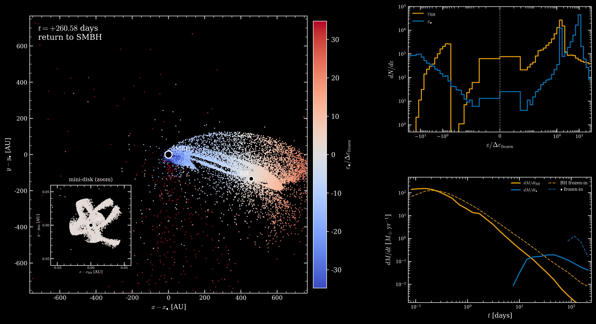
图注：微潮汐瓦解后260.58天的一万个碎片粒子。左图为空间分布，中央大黑点为中心黑洞、向右离开的小黑点为恒星级黑洞，插图显示其周围碎片和小吸积盘。颜色为相对于冻结能量扩展归一化的比能，蓝色表示束缚于中心黑洞，红色表示不束缚；右上为能量分布，右下为两个黑洞的回落率，实线为直接积分、虚线为冻结近似。
怎么看这张图：从粒子归属读到右下两次回落：基准大黑洞峰直接积分约50天、冻结约120天。回落率是供料而非辐射光度，该算例比例不是全部事件的普适值。 同时展示双事件机制及核心近似偏差。
来源与置信度：arXiv HTML；source verified；https://arxiv.org/html/2611.31361v1/figures/final_still.png
图3
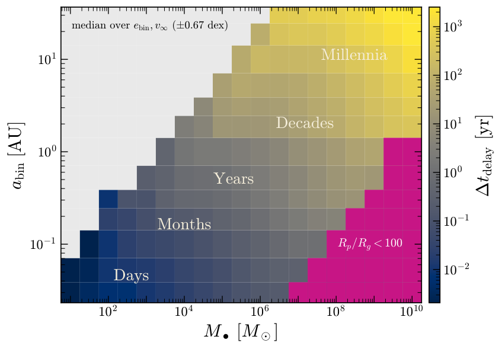
图注：冻结近似下，微潮汐瓦解与中心扰动黑洞峰值回落之间延迟在双星半长轴—中心质量平面上的热图。对初始偏心率和入射速度边缘化后，中位散布为正负0.67 dex；左上灰区无微瓦解结果，右下品红区近心小于100个引力半径，牛顿碎片积分不再适用。
怎么看这张图：沿两个坐标分别看时差如何增长，同时保留大散布和相对论禁用区；不能由单个观测时差唯一反演中心质量。 给出可随访时标及适用区域。
来源与置信度：arXiv HTML；source verified；https://arxiv.org/html/2611.31361v1/delay_Ma_validity.png
图4
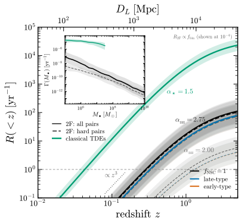
图注：观测者时间下普通TDE（绿线）与双耀发2F的累计本征率。双星密度幂律斜率分别为2.75和2.00；实线包含所有双星，虚线只含硬双星。黑、蓝、橙分别取核星团占有率1及晚型、早型星系关系。双星比例归一到10的负4次方；双耀发及普通TDE阴影主要分别来自0.65和0.20 dex的核星团质量及黑洞质量函数归一散布。插图为每星系源参考系损失锥率，普通TDE约在四千万太阳质量截止，双重通道无同样截止。
怎么看这张图：先看强弱质量分层与占有率对幅度的影响；这是未加探测选择的率，不是Rubin实际发现数，双星比例改变会整体线性缩放。 展现率预测与主导不确定性。
来源与置信度：arXiv HTML；source verified；https://arxiv.org/html/2611.31361v1/horizon_inset.svg
强相关工作
Hills机制说明大黑洞可拆散双星、俘获一员并高速抛出另一员；Yu与Lai 2024年关于双恒星潮汐拆散和碰撞的散射研究是本文数值对照。本文换成黑洞—恒星内双星，把原先的碰撞或直接拆散问题连接到微潮汐瓦解，重点是单次双曲线遭遇，而非长期束缚层级三体的Lidov–Kozai通道。
Ryu、Perna和Cantiello的Tidal Disruption Encores（2024，arXiv:2402.15590）及Johnson等2026年的流体模拟（arXiv:2510.23729）提供了碎片再被另一个黑洞吸积的相关物理。本文增加广泛散射库、延迟和截面拟合及核星团率估计；真正的辐射双峰仍需结合这类流体工作。Wang等关于微瓦解流自引力的研究（arXiv:2103.09238）则提醒测试粒子忽略的碎片碎裂可能改变回落。
同一事件 / 同类源线索：
相似工作：
基础理论 / 方法工作：
相反观点 / 张力线索：
（未提供）
5. Probing the X-Ray Structure of the $z = 2.38$ Strongly Lensed Quasar J1721+8842, the First Einstein Zig-Zag Lens, Down to $140\ \mathrm{pc}$
- 来源：arXiv / astro-ph.HE
- 链接：https://arxiv.org/abs/2611.31386
- 作者：Charlotte A. Eades, Júlia M. Sisk-Reynés, Daniel A. Schwartz, Anna Barnacka
- 公告 / 来源日期：2026-11-25
- 阅读层级：重点精读
- 评分：novelty 8/10，importance 8/10，relevance 8/10，final 9.00/10
- 推荐理由：六重透镜与Chandra似然将源平面定位推进至百pc，需区分质心精度与排除双核的条件。
中文题目：借爱因斯坦之字形透镜定位宇宙正午类星体的X射线：约140秒差距的条件性约束
做了什么：J1721+8842是红移2.38的类星体，其光线先后受红移1.885和0.184的两个星系偏折，形成六个像。作者利用五个Gaia DR3像的高精度位置及第六个HST像建立两层透镜模型，再将Chandra档案观测的逐像光子响应模拟前推到2017个试探源位置，通过同时处理指向偏移与源位置的两步最大似然方法，测量X射线相对光学发射中心的位置。两段约22 ks观测共771个0.5—7 keV光子，给出17×4毫角秒、约139×30 pc的68%源平面位置椭圆。
最佳宽带X射线位置与光学相差约44 pc，但光学中心位于1西格玛区域内；软、硬X射线也各自与光学相容。因此没有显著质心偏移证据。所谓约140 pc尺度约束是给定透镜模型下、对足以移动总X射线质心的结构的限制，并非直接量出X射线源尺寸，也不能排除暗弱、对称或不活动的第二黑洞。不同透镜模型的空间放大存在系统差异，物理尺度上限比“无显著偏移”的判断更依赖模型。
为什么重要：Chandra约0.5角秒的成像宽度在宇宙正午对应千秒差距尺度，难以直接区分靠近核区的喷流、外流和双活动核。强透镜的非线性空间放大把源平面小位移变成像平面较大位移，本文首次将这一焦散定位方法扩展到复杂的多平面之字形系统。结果不是发现双活动核，而是用既有光子获得百秒差距级的相对定位，并显示多波段质心一致性可以为高红移活动核结构提供有条件的限制。
理论 / 观测 / 仪器方法价值：方法价值在于把光学天体测量、透镜前向映射和真实仪器点扩散响应联合起来。逐像使用实际光谱、抖动和姿态进行1000次射线模拟，降低模板本身的蒙特卡洛噪声；在每个源位置内先优化整体X射线注册，再比较源位置似然，避免把Chandra绝对指向误差误当物理偏移。像F删除和位置替换测试还直接检查模型最薄弱处对最终结论的影响。
为什么应该关注：对高能辐射区研究，关键不只是源是否延展，而是X射线与光学或射电是否来自同一位置。该方法能把宇宙正午的核区定位连接到喷流结、偏移活动核和并合黑洞候选，但它要求适宜透镜几何、准确参考位置及足够X射线计数。本文的软硬一致性不等于已分辨日冕或吸积盘；值得关注的是后续光子增加后质心误差是否缩小，以及不同物理透镜模型是否给出相同的尺度换算。
展开详细解读：文章讲解、背景、理论、重点章节、图表与相关工作
文章详细讲解
科学问题是高红移类星体的X射线是否偏离其光学中心。若存在较亮的离核喷流结、外流或另一活动黑洞，合成X射线质心可能被移动；若直接观察，几百秒差距的偏移远小于Chandra的成像宽度。J1721的六像、两层偏折提供天然空间放大器，但也带来较复杂的源到像映射。
作者先用Gaia测得A—E的位置，用HST补F，逐平面优化近处奇异等温椭圆加外剪切和远处奇异等温球模型。六个像先反推为中间平面的两个虚像，再反推为同一个源。随后用实际Chandra谱和观测姿态模拟每个像，把试探X射线源经固定透镜前推成六个位置，并以泊松计数似然比较观测。每个试探位置都允许整体注册，先吸收指向误差再判断相对构型。
宽带结果的68%椭圆为139×30 pc，最佳质心离光学43.54 pc；硬带和软带的最佳偏移分别64.02与17.97 pc，都在各自1西格玛范围内包含光学中心。较窄的短轴来自靠近焦散方向更强的空间放大，不是各向同性的30 pc成像。结果支持未检出明显偏移，而不是测得一个44 pc真实位移。
主要边界有三层：771光子限制统计，透镜家族限制尺度转换，单质心模型限制对复杂结构的解释。模型不能在HST原始误差内拟合F，但F仅11光子，删去或改位置不改变无显著偏移结论；这不能证明整套透镜模型系统误差已消失。暗弱第二核、同处核区的不活动黑洞、对称延展辐射以及更小尺度结构仍可存在，必须避免把位置置信椭圆写成所有X射线辐射的硬尺寸边界。
关键结果是怎么做出来的
第一环是建立多平面物理图像。早期六像曾被解释为两个活动核，但后续六条光变一致及JWST对红弧红移的测量表明是同一类星体通过两个透镜。近透镜把中间两个虚像分别形成四像与两像，远透镜再把虚像映射到红移2.38源。图2和图3使这个步骤可视化，两个虚像之间约0.68角秒不是类星体内真实双核的分离。
第二环是光学定位。Gaia A—E误差约0.1—2毫角秒；HST通过A—E与Gaia对齐估计F总误差30毫角秒。近透镜取等温椭圆和外剪切，远透镜取等温球，依次优化而非全模型同时拟合。A—E可被精确复现，F则偏离；讨论节说明实际降低F权重时采用0.1角秒误差。表3极窄的MCMC区间是固定模型内统计误差，不涵盖透镜家族不确定性。
第三环是计数与响应。只用2022年两个ObsID 23827、26415，曝光21.67和22.66 ks，2019年的1.59 ks数据仅约20光子而被排除。总计771个宽带光子，其中软带456、硬带315；模型谱为固定银河吸收下的幂律，平均光子指数$2.12\pm0.11$。谱用于制造合适的点扩散响应，数据不需要显著铁线等更复杂组分，不能借此声称盘冕几何已测量。
第四环是两步最大似然。每个像每段观测累积1000次SAOTrace和Marx模拟；2017个宽带试探位置的焦散垂直、平行间隔分别1和2毫角秒，软硬带用745个3毫角秒网格。像平面按0.246角秒半像素形成20×20格，用Cash统计量比较模型与实际光子；内部先以15毫角秒注册步长及插值调整指向，外层再选最佳源位置，两段观测统计量相加。
第五环是限制与稳健性。宽带68%椭圆17×4毫角秒，硬带24×5、软带22×4毫角秒，各自包含光学源；软硬最佳点虽相差约80 pc，也不构成显著分离。附录A删F和移F测试均保留这一结论。讨论节明确不同透镜能使远透镜位置变化约1角秒并改变放大，因此物理尺度上限有系统误差；光学和X射线像构型相容这一事实比具体139 pc数值更稳健。
展开背景、理论、公式、模型和章节导读
背景知识
活动星系核由超大质量黑洞吸积供能，光学常与吸积盘及其周边有关，X射线则可来自近核日冕、喷流或其他高能结构。不同波段总光度相似并不保证空间同源，反过来质心一致也不能保证微观发射区相同。位置比较提供的是一条独立于能谱的结构诊断。
宇宙正午约在红移2—3，恒星形成和黑洞增长均很活跃，因此双核与反馈研究特别重要。问题是同样物理间距投影成极小角度，单纯改进源中心的统计定位并不能自动分辨多个成分。强透镜在特定几何下扩大位移，使已经存在的高分辨仪器能间接探测更小的源平面结构。
焦散是源平面上点源放大形式发散的曲线，其像平面对应临界曲线。靠近焦散时，源的微小位移能引起各像较大、且方向不同的位置变化。它不是均匀放大镜，方向和位置都重要；139×30 pc的长椭圆正体现了这种各向异性。
J1721的之字形结构由两个不同红移的透镜造成，部分光线在两层之间越过光轴。中间的两个虚像不是两个真实活动核，这是理解历史解释变化的关键。六像共同约束同一个源，而其相对位置比总通量更适合此次天体测量，因为微透镜可显著影响通量却通常只带来远小于毫角秒的位置移动。
基础理论 / 方法脉络
宏观引力偏折近似无色，所以同一个源位置的光学与X射线沿同样路径出现。若两波段发射质心不同，透镜映射就会把差别转成各像位置的不同变化。只要相对像构型足够精确，整体指向平移可以作为干扰参数去掉，而物理位移留下的相对形变仍可被测量。
多平面系统须先传播到远透镜所在平面，再继续传播到源。本文逐层拟合近等温椭圆加外剪切与远等温球，是实用的受限参数化；省略远透镜椭率、剪切和更复杂环境会缩小模型内误差，却不一定缩小真实系统误差。位置能被高精度复现不意味着放大率同样精确。
X射线像的位置并不是直接拿光子平均就够了。镜面散射、离轴角、能谱、姿态抖动和探测器响应都影响点扩散函数；因此每个像用自己的光谱和实际姿态生成模板。1000次模拟主要降低模板蒙特卡洛误差到单次约3%，不能把观测自身771光子的泊松噪声降低同样倍数。
低计数下每个像素服从泊松分布，Cash统计比把空像素或小计数当高斯更合适。注册与源位置两层优化是剖面似然，置信区依赖似然差的渐近分布。原文围绕$P$的符号文字不够一致；物理上应始终以最小化$C=-2\ln L$或最大化$L$表述，不能把$C/2$称为归一化概率。
质心约束与结构排除之间还需要通量权重。如果第二成分很暗，即使很远也仅稍微移动总质心；若两侧对称，延展很大也可能保持中心不变。因此“没有偏移”最直接限制的是足够亮且不对称的离核成分，未直接给出所有双核、喷流和外流的统一探测完备性。
公式与推导
原文主要显式公式为Cash统计量；下列透镜、误差与质心关系是标注用途的标准教学补充，并非作者新增拟合结果。单平面的源像关系写作
$\boldsymbol\theta$为像位置，$\boldsymbol\beta$为源位置，缩约偏折$\boldsymbol\alpha$含距离因子。本文须逐平面传播，不能把两个透镜无条件相加成一个平面。
标准多平面示意为
$D_{ij}$与$D_j$是角直径距离，带帽偏折为物理偏折；上一层改变进入下一层的位置。本文六像经两个虚像归于同一源，便是这一传播结构的具体参数化。
局部线性化给出
靠近焦散时$A$某个本征值变小，源平面小移动对应较大像移动；不同方向本征值不同，所以置信椭圆不会是圆。空间放大不能简单用总通量放大70.9替代。
线性误差传播为
这是解释椭圆方向的教学近似，本文实际用非线性源网格前推和似然；它也说明透镜参数变化会改变源尺度误差，即使像面吻合良好。
原文式(1)的等价规范写法为
$n_i$为观测计数，$\lambda_i$为响应卷积后的模型期望；两者均无量纲，空像素同样有约束。最小$C$对应最大似然，绝不是最小概率。
两层优化可概括为
注册平移$\boldsymbol\delta$吸收绝对指向误差；外层遍历源位置。将$\Delta C=C-C_{\min}$按两位置自由度解释，可绘制68%、95.5%、99.7%区域，但模型系统误差不会自动进入这些轮廓。
角度到投影尺度的教学转换为
角度需用弧度；原文宇宙学给红移2.38处约0.122角秒每千秒差距，故17毫角秒约140 pc。计数平方根标度只适合其他响应和模型保持不变时，不可当成任意数据量下精度无限提高。
最后，两成分总质心满足
其中$q=F_2/F_1$，$d$为分离。这是解释限制的教学关系，不是本文双源拟合。当$q\ll1$时很大的$d$也能产生小偏移，因此139 pc的质心椭圆不能成为对任意亮度比双黑洞的绝对排除半径。
模型拟合 / 应用方法
光学模型固定两个透镜的红移，近透镜等温椭圆含外剪切，远透镜等温球的椭率和剪切固定为零。拟合不使用像通量，避免微透镜干扰；红弧位置也未作为主拟合约束。Gravlens先优化近透镜得到虚像，再优化远透镜得到源，MCMC给模型内参数区间。表3极窄误差因此不可与跨模型物理精度等同。
F的HST测量误差为30毫角秒，但模型无法同时很好复现A—E与F，讨论节说明拟合中将F误差放大至0.1角秒降低权重。F仅贡献11/771光子，删去F或把其位置移到模型预测值时三种能段最佳点均留在原1西格玛椭圆内。这个测试说明F不是当前统计结论的驱动者，没有解决可能造成其像位置偏差的所有质量结构。
每像光谱采用固定银河氢柱$5.85\times10^{20}\,\mathrm{cm}^{-2}$的吸收幂律；平均光子指数2.12、总流量约$2.95\times10^{-13}\,\mathrm{erg\,s^{-1}\,cm^{-2}}$供参考，天体测量实际按每段观测独立处理。没有显著需要铁线，不能解释成不存在铁线。像D硬带约1.88倍变化仅约2西格玛，六次硬带测量至少一次这样涨落概率24%，作者没有把它确认为微透镜或源内变异。
X射线模型以2017点宽带网格及较粗软硬网格搜索，在每一点剖面化注册平移，叠加两段独立观测Cash统计得到轮廓。拟合采用单一质心发射位置，未做不同亮度比、分离及形态的双源或延展源注入完备性研究。因此对双活动核和喷流的物理解读应限定为足以移动质心且当前计数敏感的成分。
系统误差检查显示加入四个环境扰动体未改善所用模型的像面RMS；红弧反推位置与质量模型有约0.05—0.2角秒差别。不同合理模型可改变远透镜位置、焦散距离和总放大，作者明确这会改变物理尺度上限。总放大70.9与另一模型52.1给内禀1.7—24 keV光度约$1.85$—$2.52\times10^{44}\,\mathrm{erg\,s^{-1}}$，但这不是完整系统误差区间，不能拿来宣称精密光度测量。
重点章节 / 结果段落怎么读
-
第II节、图1—2：先建立一个类星体、两个透镜、两个中间虚像、六个观测像的几何，避免沿用旧双核解释。
-
第III—IV节及表1—3：核对Gaia与HST位置误差、逐平面模型和F处理，分清统计精度与模型准确度。
-
第V节、图4—5和式1：沿逐像射线模拟、源网格前推、注册、Cash统计相加理解为何能突破直接成像尺度。
-
第VI节和图6：比较宽带、硬带、软带置信椭圆，抓住光学中心都在1西格玛内，最佳点偏移不是显著测量。
-
第VII.1、VII.3及附录A—C：将透镜尺度系统误差、F测试和质心模型局限带回约140 pc的解释。
关键图表与解读
图6
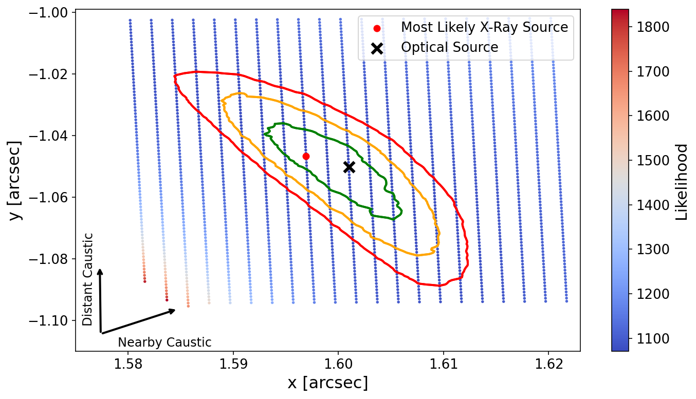
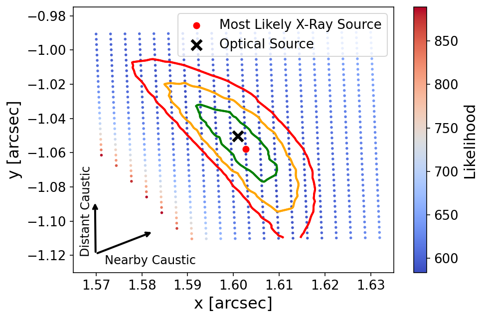
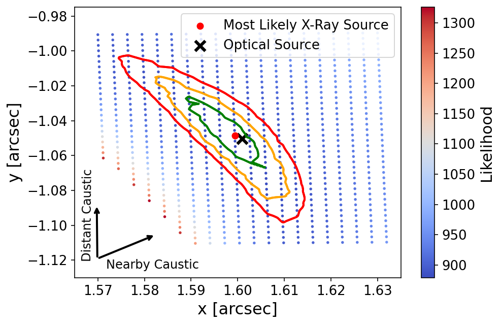
图注：源平面X射线相对光学位置重建：(a)0.5—7 keV宽带，(b)2—7 keV硬带，(c)0.5—2 keV软带。绿色、橙色、红色轮廓分别为68%、95.5%、99.7%置信区；网格颜色表示两段观测合并后的似然拟合量，最佳点对应Cash统计最小值。软硬带网格较宽带粗，箭头分别指向远透镜焦散和近透镜内焦散。
怎么看这张图：三幅都应先看光学源是否位于绿色轮廓内；答案均是。长短轴差异来自方向放大，最佳点与光学约44、64、18 pc的位移不是显著偏移，轮廓也不是物理源边界。 全部核心定位结论及无检出边界。
来源与置信度：arXiv HTML；source verified；https://arxiv.org/html/2611.31386v1/combined_contours.png；https://arxiv.org/html/2611.31386v1/combined_contours_hard.png；https://arxiv.org/html/2611.31386v1/combined_contours_soft.png
图8
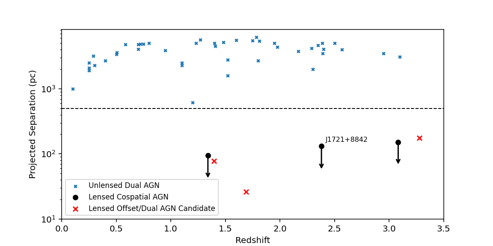
图注：不同红移系统中双活动核候选或多波段偏移的投影尺度比较。蓝叉为HST发现的未透镜双活动核候选；红叉为焦散法中X射线与光学/射电显著偏移的MG B2016+112、HE 0435-1223及B1608+656。黑圆为质心相容的J1721、J065904.1+162909和B0712+472，其纵向尺度表示可分辨的最大分离尺度。
怎么看这张图：红叉的测得偏移与黑圆的分辨能力含义不同，不应一起当真实双核分离样本；本源的价值是高红移条件性定位能力。 比较方法覆盖尺度并区分测量与上限。
来源与置信度：arXiv HTML；source verified；https://arxiv.org/html/2611.31386v1/Projected_separations.png
强相关工作
J1721曾被Lemon等2022年及Mangat等2021年解释为透镜双活动核，后来Dux等通过共同光变及JWST红弧红移确认为单一源的双平面之字形透镜。Schmidt等TDCOSMO XVIII对该系统的强透镜和时延建模是重要对照；本文使用更精确的Gaia DR3像位置优化天体测量，但跨模型远透镜质量及放大差异大于模型内统计误差，这正是物理尺度不能过度精确化的原因。
焦散定位方法承接Barnacka及Spingola、Schwartz等对四像类星体的研究，已经应用于MG B2016+112、HE 0435-1223、B1608+656等。本文是该系列第六个系统，主要新意是多平面六像推广及软硬能段定位。那些系统中的显著偏移需要辅以能谱、射电或宿主信息判断双核与喷流，不能把其他源的解释移植到本源；J1721得到的是无显著偏移。
同一事件 / 同类源线索：
相似工作：
基础理论 / 方法工作：
（未提供）
相反观点 / 张力线索：
（未提供）
6. On the evidence of lensing in GW231123
- 来源：arXiv / astro-ph.HE
- 链接：https://arxiv.org/abs/2611.31389
- 作者：Anna Liu, Mick Wright, Jef Heynen, Eungwang Seo, Isaac C. F. Wong, Disha Hegde, Laura E. Uronen, Harsh Narola
- 公告 / 来源日期：2026-11-25
- 阅读层级：重点精读
- 评分：novelty 8/10，importance 8/10，relevance 8/10，final 9.00/10
- 推荐理由：四波形支持存在差异；约4sigma依赖XPNR450背景尾外推与84次试验，重要候选而非确定发现。保留精读。
中文题目：GW231123的多重重叠像解释：接近四西格玛的透镜候选，尚不是发现
做了什么：GW231123是一个持续很短、质量很高的双黑洞并合信号；按未受透镜影响的准圆轨道并合拟合，不同波形模型会给出彼此不一致的质量和接近极限的自旋。作者把观测信号写成同一并合波形的多份延迟、缩放和移相副本，不预先指定透镜质量分布，并用四种包含自旋进动及高阶多极矩的波形比较有、无透镜假设。四种模型均偏好透镜，但支持强度明显不同：以10为底的贝叶斯因子对数从0.7至4.65；除XO4a略偏好两像外，其余偏好三像，主要延迟约22毫秒，第三像再延迟约38毫秒。
透镜解释使不同模型的探测器参考系啁啾质量收敛到约120—126个太阳质量，并降低极端自旋的支持。450个未透镜信号注入真实O4a噪声后，半解析尾部分布外推给出计入84次试验的显著性估计$3.96^{+0.68}_{-0.30}\sigma$。这依赖XPNR波形、背景总体和尾部拟合，不能读成450次模拟直接测得的发现概率，也不足以宣称首次探测到引力波透镜。
为什么重要：这项工作把一个质量和自旋异常的源性质问题转化为可检验的传播效应问题：波形后段结构可能来自延迟副本，而非黑洞本身更极端的动力学。跨模型参数一致性、双台站一致性和真实噪声背景共同加强候选可信度；波形系统误差与透镜天体先验的不确定性仍未解决。科学推进是建立较完整的候选证据链，而不是已经确认中等质量黑洞或暗物质透镜。
理论 / 观测 / 仪器方法价值：最可借鉴的是把现象学信号模型、源参数偏差诊断和假警概率标定分开处理。可变像数扩大搜索形态，固定像数检查增加自由度的收益，单台站复算检查瞬态驱动，真实噪声注入标定未透镜总体可产生多大的贝叶斯因子。迁移时必须重新匹配信号持续时间、波形有效域和背景选择，不能直接套用本文显著性。
为什么应该关注：对于高能与多信使研究，本文提供了理解重复或重叠瞬变的严格范例：先区分源内结构与传播复制，再处理事件搜索次数及背景尾部。它与伽马暴透镜候选的难点相通，但引力波副本共享可计算的相位演化，证据结构不同。后续应关注物理自洽且先验概率合理的复杂透镜能否保持支持；本文没有报告电磁或中微子伴随体。
展开详细解读：文章讲解、背景、理论、重点章节、图表与相关工作
文章详细讲解
科学问题是：GW231123的异常波形究竟需要极端双黑洞参数，还是常规源波形叠加了沿途引力透镜效应？高质量系统在地面探测器频带中只有很短的信号，自旋进动、并合振铃、瞬态噪声和传播干涉可能影响相似的几个周期。只让源参数自由变化，缺失传播物理就可能被自旋吸收。
作者采用几何光学下的多像叠加，而非孤立点质量的特定放大函数。各像共享内禀参数和天区位置，但有各自相对放大、时差与Morse相位；像数在1—6之间采样，并另做固定1—5像分析。四种波形均含进动和高阶模，因而是在多种当前波形近似上检验加入传播结构的收益。
结果有三层联系。拟合层面，NRSur、XPNR、XPHM-ST分别给出对数贝叶斯因子3.05、2.84和4.65，XO4a为0.7。结构层面，多数模型的时差与相对放大相容，第三像弱而不能单独稳健找到；仅用两像，XPNR和NRSur仍给出2.7与2.9。源参数层面，加入透镜后质量估计更一致，自旋更温和。这些不是三个完全独立的发现，因为均部分依赖同一波形建模。
局限来自统计尾部和物理解释。450次背景没有一个超过真实事件，只能直接提供约$1/450$的有限采样分辨率；接近四西格玛来自外推。高质量事件在背景中偏少，波形误差仍可能伪造透镜特征。现象学三像也不自动对应已识别的透镜；绝对放大与距离退化，缺少另一条强透镜对应事件限制环境重建。下一步需要针对性背景检验及物理透镜族先验，不能直接由拟合优度推出暗物质丰度。
关键结果是怎么做出来的
第一步建立同一事件的多波形对照。NRSur是数值相对论代理模型，另外三种属于Phenom系列，各自对进动和并合区的近似不同。表1表明透镜偏好不只出现于单一模型，但XO4a远弱于其余三者，不能用全部支持抹平系统差异。图1把NRSur重建与相干WaveBurst的弱模型依赖重建比较，透镜解在约0.02秒后的形态吻合较好；这是定性一致性，不是额外的显著性测量。
第二步检查新增分量。NRSur的第二、第三像相对放大中位数为0.27、0.04，第二像时差为$22^{+6}_{-7}$毫秒，第三像相对第二像为$38^{+7}_{-10}$毫秒，均为90%可信区间。XPNR三像单独最优网络信噪比约18、10和3.9；弱第三像只能借助与主像严格共享的形态在联合模型中获得支持。三像相对两像的对数贝叶斯因子约0.8，不能叫第三像独立检出。
第三步检查自由度与噪声。固定像数的似然从一像到三像增加，之后饱和；XPNR的Hanford与Livingston单台站分析得到相容支持和参数。这削弱单台站微毛刺驱动解释，但不排除共享的源波形误差。前两像的Morse相位相容于相同像型，第三像相容于另一像型；这是可行性检查，不是透镜密度分布的唯一反演。
第四步追踪源参数。图2在相同坐标画未透镜与透镜的质量、自旋后验；共同进入较温和自旋区域提示原来的波形差异可能在吸收遗漏效应。120—126太阳质量指探测器参考系啁啾质量，不能误称源参考系总质量。绝对放大不可测，所以源质量可能下降只是结合放大的条件性解释，本文没有无退化地量出真实距离。
第五步标定异常程度。背景质量、自旋、红移分别取GWTC-4的Broken Power Law + 2 Peaks、Gaussian Component Spins、Power Law Redshift拟合；XPNR注入无Omicron信噪比大于6瞬态的真实O4a片段，要求网络最优信噪比8及单台站4.5。450个检出样本构成图3背景。尾拟合给出未校正$4.91^{+0.57}_{-0.24}\sigma$，84事件试验后降为$3.96^{+0.68}_{-0.30}\sigma$。1000次自助抽样及最高5%共22点的广义Pareto尾拟合提供检查，后者为4.23西格玛；它们没有创造独立高尾部事件。
展开背景、理论、公式、模型和章节导读
背景知识
引力透镜使波沿弯曲时空中的多条路径传播。光学源多像可以在角位置上分开；地面引力波探测器不能分辨这样的角度，却能追踪快速时间和相位结构。若像间延迟短于信号持续时间，观测到的是相干叠加后的一个畸变事件，不能只按两次独立触发寻找。
双黑洞波形包含旋近、并合与振铃。质量越高，同一无量纲演化在物理时间中越慢，辐射频率越低，落入地面频带的旋近周期可能越少。GW231123主要由少数强周期约束参数，这使它既敏感于延迟副本，也更容易受到波形校准不足和瞬态噪声的影响。
自旋进动让轨道方向变化，调制振幅和相位。透镜干涉也可产生类似调制，因此两者有退化。未透镜模型可能以较高自旋解释传播结构，所以极端自旋变温和是有用诊断；反过来，它不是透镜的充分证明，改进源波形也可能改变自旋后验。
模型证据、假警概率和天体物理先验回答不同问题。证据比较给定参数先验下哪个模型更解释数据；假警概率问未透镜总体多常产生同样强的统计量；先验赔率问这类透镜在宇宙中多常发生。本文重点推进前两步，第三步仍受种群和环境不确定性限制，故大贝叶斯因子不等于发现。
基础理论 / 方法脉络
几何光学把每条驻相路径对应为一个像。费马势的极小、鞍点、极大对应Morse指数0、1/2、1，并带来离散相位。这个表示适合本文短时重叠像及所讨论的质量尺度，但不是任意衍射的精确通解；模型无关指不固定透镜密度轮廓，不是没有光学近似。
应变是振幅，像的权重随放大率平方根变化。时移在频域成为随频率线性变化的相位，多像相加便产生频率依赖干涉。毫秒延迟对应几十赫兹量级起伏，可改变短暂并合形态；时差、放大和源自旋必须同时拟合，才有机会拆开调制来源。
第一像整体放大可吸收进有效光度距离，单个事件无法独自确定。相对放大和时差控制形态，绝对放大控制真实距离解释。探测器参考系质量还需除以红移因子才是源质量；忽略这层会把质量后验更一致错误升级为已量出更轻的源。
贝叶斯证据对所有参数积分，对只在窄区改善拟合的复杂模型施加奥卡姆惩罚。可变像数后验权衡拟合收益、参数体积和像数先验；到达时刻排序避免交换标签导致重复计数。固定像数复算则显示支持究竟由哪个分量产生。
尾部模型利用信噪比与波形差异的标度估计大贝叶斯因子的发生率。理论动机依赖高信噪比和平稳高斯近似，实际拟合对象则是真实噪声注入背景；后者不意味着已包含任意非高斯或波形误差。另一类极值分布外推检验方法依赖，但全部尾估计共享有限背景。
公式与推导
以下把论文式(1)展开，随后区分标准统计关系与论文式(2)。先定义相对放大和时差：
前者无量纲，后者以秒计；应变权重为放大率平方根。
时移的傅里叶性质给出论文模型：
频率$f$以赫兹计，指数无量纲，$n_j=0,1/2,1$分别对应三类驻相点。共享源波形使弱副本可以通过相位一致性积累证据。
两像极限的教学展开为
22毫秒延迟对应约45赫兹干涉间隔；这只是读图标度，不取代三像完整响应。
标准振幅与参考系关系是
若源被放大却按无透镜解释，就会低估红移、高估源质量。相对像参数无法独自确定$\mu_1$，因而没有唯一质量修正。
标准贝叶斯比较为
像数作为离散参数还需求和。证据不等于最大似然，因此额外参数并非只要改善拟合就一定获得更高支持。
其物理解释还需要
右端第二项是天体物理先验赔率；表1没有测定它，所以不能把贝叶斯因子直接称作透镜概率。
从背景统计量$x=\log_{10}\mathcal B$到搜索假警率，教学关系为
小概率近似与相应试验假设必须保留。450次无超越不能直接量出极小概率，需要外推。
论文式(2)使用
这里$f$改指自由拟合系数，不是频率；$d,\mathcal O$也作为自由参数，正态项第二个量是标准差。再对$\rho^{-\alpha}$的信噪比分布积分，利用BB关系变换为背景并拟合尾部。显著性区间描述这种拟合的不确定性，不包揽所有波形和种群误差。
模型拟合 / 应用方法
输入为两个LIGO台站的应变和噪声刻画，Gravelamps调用bilby与dynesty嵌套采样，源参数先验沿用GWTC-4。新增相对放大采用0.01—100的对数均匀先验，相邻时差采用0.001—0.1秒均匀先验，Morse指数三值离散均匀，像数1—6离散幂律。宽先验方便探索，也使证据对先验体积有实质依赖。
采样维护所有可能像参数，每个样本只让前$k$像进入波形；到达顺序约束消除标签交换。固定1—5像复算把离散先验与具体形态改善分开。超过三像后似然饱和，说明数据不要求更多可辨识分量，不意味着物理配置没有第四个更弱像。
XO4a在单像与多像之间有不同自旋结构。其两像后验的一支匹配三像解的第二像，另一支匹配较弱第三像并保留极端自旋；扩展图5画出了这种模式混合。后验均值或一个最佳时差会掩盖多峰，应先看像数条件下的分布再比较整体结果。
背景拟合的自由量包括信噪比幂律指数和阈值、波形差异系数、有效维数、奥卡姆项和散布系数；奥卡姆项和维数先验上界分别放宽到15和16。拟合后验传播到尾部概率，自助抽样和广义Pareto拟合作交叉诊断。后者只有22点，所以极尾依旧是模型推断而非直接观测。
本文没有完成囊括所有波形误差、微毛刺、独立重叠并合、偏心轨道及物理透镜种群的统一赔率计算。真实噪声片段经过瞬态筛选，高质量背景不足，注入与恢复共享XPNR也不能充分代表实际波形误差。因此图1的形态改善与表1证据是候选支持，不能声称替代解释已被全面排除。
重点章节 / 结果段落怎么读
-
引言与方法第一节：抓住几何光学、共享源参数和像数先验，明确模型无关的范围。
-
Results首节、表1与扩展图4—6：比较四种波形的支持，再读固定像数与单台站检查，避免把第三像联合支持当独立检出。
-
Source properties与图2：沿质量、自旋、绝对放大退化三步读，区分探测器参考系和源参考系。
-
Significance Calculation及图3、扩展图7—8：先读注入总体和选择，再区分直接背景、尾外推、84次试验和重采样。
-
Discussion：把微毛刺、波形系统误差及物理透镜先验带回结论，理解候选与发现的界线。
关键图表与解读
图1
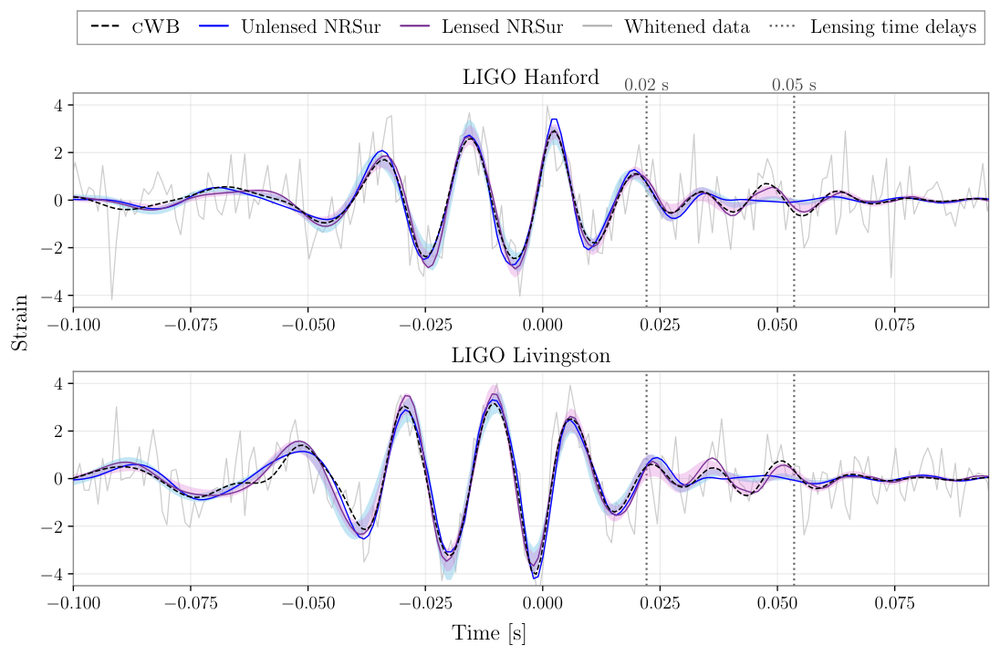
图注：GW231123在两个LIGO探测器的时域重建。灰线为白化应变，黑虚线为相干WaveBurst重建；蓝、紫曲线为NRSur无透镜和有透镜的最大似然波形，阴影为90%可信区间。竖点线标出近似透镜延迟，时间相对2023年11月23日13:54:30.619 UTC。透镜解在约0.02秒后的形态上定性吻合较好。
怎么看这张图：看两个台站后段共同结构及紫线与黑虚线的关系；形态改善不是目测显著性，cWB也不是独立事件数据。 显示传播副本改善的观测结构。
来源与置信度：arXiv HTML；source verified；https://arxiv.org/html/2611.31389v1/waveform_reconstruction_NRSur_two_panel_maxL.png
图2
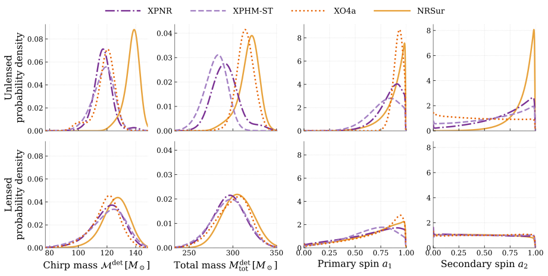
图注：各波形模型的后验分布，从左至右为探测器参考系啁啾质量、总质量、主和次黑洞的无量纲自旋大小。上排无透镜、下排有透镜，同列共用坐标。透镜解释下质量后验更一致，对高自旋的支持降低。
怎么看这张图：沿同列上下比较，再比较模型；图中没有解除绝对放大与距离退化，不可读出唯一源参考系质量。 支撑源参数一致性核心结论。
来源与置信度：arXiv HTML；source verified；https://arxiv.org/html/2611.31389v1/masses_and_spins_lensed_vs_unlensed_v2.svg
图3
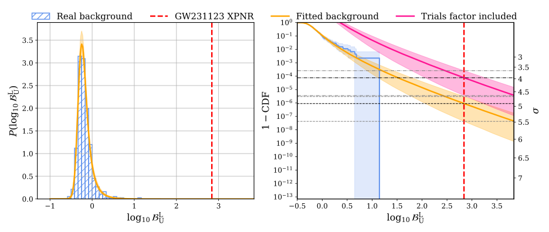
图注：左：450个XPNR未透镜注入的对数贝叶斯因子直方图及拟合，红竖线为GW231123。右：背景互补累积分布与橙色拟合，粉色曲线加入GWTC-4.0新增双黑洞事件的试验修正；水平线表示拟合中位数及90%可信区间边界对应的显著性。
怎么看这张图：分清实际背景覆盖与事件所在极尾；约四西格玛依赖尾部外推，不是450次直接采出的概率。 展示显著性及发现边界。
来源与置信度：arXiv HTML；source verified；https://arxiv.org/html/2611.31389v1/GW231123_bg.svg
强相关工作
本文直接承接Liu等2023年MNRAS 525, 4149—4160的任意毫透镜配置框架，把多像放大、时差和相位作为观测参数，而不先选孤立点质量。Liu与Kim 2024年的进动—毫透镜退化研究（Phys. Rev. D 110, 123008）解释了为何应追踪自旋移动：高自旋可吸收遗漏传播调制。这些是模型和诊断基础，不是本事件真实性的独立观测证据。
同事件的LVK搜索及Goyal、Shan、Chan等工作分别探索具体透镜或不同波形畸变方法；本文增加可变像数、四波形、双台站和真实噪声背景的统一检验。Hegde与Janquart的波形系统误差研究、Cheung等的天体物理先验研究则限制模型支持如何转化为实际透镜概率。继续阅读可用GW231123 lensing waveform systematics及millilensing precession degeneracy，并对照原文引用13—16、30、33、44—45。
同一事件 / 同类源线索：
相似工作：
（未提供）
基础理论 / 方法工作：
相反观点 / 张力线索：
7. Machine learning enables full Bayesian inference for spinning extreme-mass-ratio inspirals
- 来源：arXiv / astro-ph.HE
- 链接：https://arxiv.org/abs/2611.31916
- 作者：Bo Liang, Minghui Du, Zhenwei Lyu, Hanlin Song, Jiakai Zhang, Weichen Qin, Chia-Jui Chou, Yi Yang
- 公告 / 来源日期：2026-11-25
- 阅读层级：重点精读
- 评分：novelty 8/10，importance 8/10，relevance 8/10，final 9.00/10
- 推荐理由：14维EMRI完整先验搜索推进实际推断，但模拟波形和单环扇区后验限制必须保留。
中文题目：神经网络缩小搜索域、精确似然求后验：一年自旋EMRI的14参数推断演示
做了什么：极端质量比旋近（EMRI）在一年里累积极长的相位信息，理论上能精密测量中心黑洞质量和自旋，却也让宽先验中的真实似然峰极难找到。作者提出NEBULA-EMRI：生成式网络先从完整先验定位候选区域，逐轮模拟和训练收缩参数域，再用两个探测器各自的似然筛选、逐步延长相干时间以及并行温度马尔可夫链抽样完成推断。神经网络只提供搜索域和初值，最终似然与后验权重不使用神经密度。
对一个使用AAK近似波形、平稳高斯噪声的一年LISA—Taiji模拟源，网络信噪比约131，作者在自旋方向退化环的一个被跟踪扇区内得到14参数联合后验：中心黑洞探测器参考系质量和自旋的68%相对半宽约$1.9\times10^{-5}$和$2.4\times10^{-5}$，距离约0.8%。这不是实际探测结果，也不是已经遍历全局全部自旋扇区的无条件后验。最终显式距离链提前结束，收敛证据弱于前面的13维剖面链；这些边界决定了本文应被读作高精度端到端方法演示。
为什么重要：过去EMRI精度预报常从真值附近出发，绕过最难的全先验搜索；找到一个参数接近真值的点，也未必进入一年相干似然的正确窄峰。本文把候选定位、跨探测器筛选、相干时间延续和多峰采样连接起来，在含自旋的14维AAK问题上实现了远超点估计的信息输出。贡献是显示这种反问题在明确模型及扇区条件下可处理，不是已经验证现实空间引力波数据的全部复杂性。
理论 / 观测 / 仪器方法价值：可迁移的方法原则是让机器学习负责高维搜索提议，让可计算的物理似然负责最终证据，同时显式记录搜索域边界。本文尤其有价值的诊断是发现原13维域截断了小天体质量和距离，放宽11个非相位参数区间并显式采样距离后，六个内禀参数区间扩大约1.7倍。它提醒快速算法必须检查域截断、漏模态和参数相关性，不能仅展示漂亮而极窄的角图。
为什么应该关注：EMRI连接核星团捕获、吸积盘迁移、黑洞自旋增长史和强场时空，也是活动星系多信使研究的潜在入口。本例偏心、逆行轨道展示未来如何约束形成通道，距离与天区联合定位则为暗汽笛宇宙学提供输入。但论文没有真实宿主、红移测量或哈勃常数后验，也没有采样偏离Kerr的参数；后续应重点看全扇区证据比较、更精确波形、重复注入覆盖率以及数据缺口和重叠源检验。
展开详细解读：文章讲解、背景、理论、重点章节、图表与相关工作
文章详细讲解
科学难点来自同一物理性质的两面性。小致密体围绕大黑洞走过大量轨道，波形相位记录质量、自旋、轨道偏心和进动；一年累积约十万弧度使极微小频率误差也变成显著失相干。于是最终似然很尖且多峰，宽先验直接MCMC常被错误谐波匹配困住。本文并不通过减少自旋或固定外禀参数消除难题，而是分阶段把搜索送到可相干追踪的区域。
网络阶段先学习六个内禀量、距离和网络信噪比，再逐轮收缩并学习天区、自旋方向及轨道相位；高分辨流显示围绕视线的自旋退化环。四个扇区分别作似然优化后，作者只继续最佳的第三扇区。精确阶段先在LISA和Taiji各自30天数据上寻找共同支持的候选，再将相干时长从30、60、180、360天推进到一年，最后用并行温度链处理该扇区内多个似然盆地。
关键结果来自一年联合模拟的显式14维距离抽样。注入中心质量约977430太阳质量、小天体约33.11太阳质量、自旋0.945、偏心率0.320、倾角余弦负0.385，距离2.281 Gpc；LISA与Taiji最优信噪比分别46.18和122.56。质量、自旋及轨道量达到十万分之几到万分之一的相对精度，距离约0.8%、天区小于平方度。延长相干时间使六个内禀量区间较30天缩小13—69倍，明显超过仅由信噪比增长预期的约3.5倍，说明长期辐射反作用的频率演化提供额外信息。
边界必须和结果同等突出。网络与优化筛选后的域相当于截断先验，未跟踪的三个自旋扇区尚未贡献后验权重。最终显式距离链原计划2000步却在914步结束，作者用451—900步，收敛没有13维链那么牢固。仅一个源和一个高斯噪声实现不能验证总体覆盖；AAK是近似真空Kerr波形，未加入环境和偏离Kerr参数，故不能把精密参数恢复称为黑洞唯一性定理检验。
关键结果是怎么做出来的
第一环定义明确的模拟反问题。FEW的Pn5AAKWaveform把增强解析kludge波形与五阶后牛顿轨道演化结合，14量包括两质量、自旋大小、三个初始轨道量、距离、天区两角、自旋方向两角及三个相位。质量为红移后的探测器参考系量。完整先验在这些坐标独立均匀，极角不是各向同性先验；模拟以10秒采样一恒星年，加入两个探测器A/E四个独立高斯噪声通道，并采用第二代时间延迟干涉响应。
第二环检验前端搜索能力。F0在5万个源训练，每次载入随机改变信噪比并刷新噪声；2000个独立测试源中，八个目标各自3西格玛区间形成的联合盒子包含真值比例为98%。这是网络目标空间的盒覆盖率，不是最终14维后验已达到98%校准。单GPU下编码与1024个流样本小于1秒，也仅指这一摊销步骤，不包括训练、逐轮模拟、优化与最终链计算。
第三环揭示筛选与退化。R1—R7以后还借助90天半相干粒子群和相干优化找到候选，再训练FlowA的5万与Formal14的10万模拟。4096个高分辨提议中3968个形成自旋环，分为893、1056、825、1194个样本的四扇区；似然最高的825样本扇区被继续跟踪。最终搜索盒相对原先验体积收缩约$5.41\times10^{17}$，这是坐标盒体积比，不是信息增益或已积分的后验概率。
第四环克服一年相干陷阱。直接从网络区域启动一年优化仍得到比纯噪声更差的候选，于是改从30天开始。两台站各给2048候选，4096个交叉评分后622个两边都优于纯噪声；以两台站归一化分数较小者排序，选16类代表。随后逐步延长相干时间，用短并行温度链把彼此分开的冷链代表传给下一时段。作者未做同计算量无筛选初始化对照，故不能量化双台站筛选单独带来多少效率收益。
第五环核对真正报告的区间。13维剖面链有16温度、每温度256行走者、2000步，保留后1000步；最大分裂Rhat为1.0085，各盆地占比两半总变差4.4%，但原域在小质量和距离上截断后验。放宽11个非相位区间1.5倍并显式采样距离后，最终115200个相关冷链状态给表1和图1区间。它们比剖面区间宽1.73—1.78倍，说明原来较窄精度不可用。自旋方向与相关相位仍触及扇区域，整个测量因此为条件后验。
第六环检查推断的物理含义。14个真值中10个处于68%区间内，天区两角偏约2.1和2.4个标准差；这种单例结果没有明显反常，却不足以证明校准。源参考系质量还需红移精度，距离0.8%也不自动等于哈勃常数0.8%。偏心逆行轨道能提供通道判别信息，但未做各形成种群的贝叶斯赔率；Kerr假设下高精度恢复同样不能说明已排除非Kerr时空。
展开背景、理论、公式、模型和章节导读
背景知识
极端质量比旋近是恒星级致密体逐渐落向大质量黑洞的过程。小天体近似测试粒子，绕中心强场轨道反复运行，辐射反作用慢慢改变轨道。它与地面探测器看到的质量相近并合不同，关键不是最后几个周期，而是长期、丰富谐波的相位历史。
旋转黑洞的轨道通常有径向、极向和方位三个基本频率，偏心和倾斜让它们的不同整数组合进入频谱。自旋拖曳、近心进动以及探测器绕日运动同时调制信号。不同参数组合有时能匹配一部分谐波却错失整体，相位积分则把这些微小差别放大成很大的似然差。
“宽先验能找到源”与“真值附近可测得很准”是两个问题。Fisher预报或从已知参数附近启动的采样主要回答第二个；实际观测还必须搜索巨大的先验体积并识别远隔模态。论文把这两个步骤接起来，但从完整先验开始不自动意味着最终已积分完整先验的全部模态。
生成式推断网络学习模拟到参数分布的映射，可以快速提出候选，却可能有覆盖偏差或漏峰。用精确物理似然重做最终抽样可避免直接把神经密度偏差当测量，但若网络提前丢掉真实模式，后续链仍无法自动找回。因此必须检查搜索边界、保留多盆地，并逐步扩展到全扇区和重复噪声实现。
基础理论 / 方法脉络
频率误差在长观测中累积成相位误差，长期相干既提供惊人的精度也制造窄且曲折的似然流形。将数据先截为较短时间会放宽相位匹配容忍度，使候选盆地更容易接近；逐步延时则把已经相干的候选继续收紧。这个过程不是把不同时段似然数值相互比较，而是在每个时长重建对应响应和傅里叶数据。
两个探测器有不同轨道、方向和响应，某个只偶然吻合部分谐波的候选未必在两者都有效。独立30天评分要求两边均优于纯噪声，并以弱的一边决定排序，防止高信噪比Taiji完全掩盖LISA的不相容。正式联合阶段仍用同一个源波形和同一个距离，筛选只是初始化，不改变固定域内目标似然。
自旋方向退化环反映绕视线旋转系统主要改变偏振，而部分改变可被初始相位补偿。网络从模拟学到环形，不意味着这些点在一年精确似然中等权；不同探测器的偏振敏感性会打破部分退化。只跟踪一个扇区则会限制自旋方位及其相关相位的区间，不能用单扇区内收敛代替全环权重比较。
距离仅通过整体振幅反比进入固定其他参数的波形，使最大化距离可以解析完成，降低搜索维数。最大化叫剖面化，积分才是边缘化；在线性信号近似下其他参数协方差相同，但边界和非高斯性可破坏简单等价。本文真正发现的问题是原域截断相关参数主轴，故最终必须扩域且显式采样距离。
并行温度链在不同温度下把似然逐步变平，高温链跨越低概率间隙，交换把探索结果传回冷链。只有冷链对应报告后验；多温度接受率、冷链平稳性和模态占据都应检查。相关样本数不能当独立有效样本数，且前一阶段良好Rhat不能自动保证后来提前结束的14维链同样收敛。
公式与推导
首先以标准教学关系解释相干困难：
一年累积约$10^5$弧度时，相对频率偏差$10^{-5}$即可产生约一弧度失配；精度来自积分，搜索也因此变得尖锐。若频率随辐射反作用缓慢漂移，还需长期数据测其导数。
论文方法式(1)对未归一化离散傅里叶变换定义
$I$为LISA或Taiji，$c$为A/E通道，$S_n$为单边噪声谱；掩掉响应零点，模板与数据采用相同窗及零填充，避免数值权重不一致。
高斯噪声下原文式(2)是
$dd=(d|d)$、$dh=(d|h_0)$、$hh=(h_0|h_0)$，参考距离1 Gpc。这里的精确指给定AAK波形、响应和噪声模型下精确计算似然，不指波形已经是精确广义相对论解。
对振幅求导并限制距离域，得到式(3)：
无边界最优值来自$-dh+\alpha hh=0$。若后验靠近距离边界，clip改变相关参数方向的形状；最终结果因此改用14维显式距离抽样。
最终域内后验的标准表达为
$B$为被保留搜索域，包含选定自旋扇区；神经网络密度不乘在右端，但它通过$B$影响哪些区域可被抽样。这是为何需要明确条件后验，而不能宣称自动恢复全局无条件分布。
原文式(4)定义盒收缩率
周期角使用保留弧长。约$5.41\times10^{17}$是该坐标化下轴对齐盒的体积比，不是证据、熵或最终有效样本量。
网络的条件分解是式(5)：
$z$是数据嵌入，$\eta_{11}$为非相位量，$\Phi_0$是三相位；圆样条流处理三维环面。这种条件分解保留相位与其他参数相关，不是假定相位独立，也不是最终后验权重。
两探测器筛选的原文式(6)为
额外分段相位与三个轨道相位不同；只保留两台站分数均正的候选。它不是已标定发现显著性，且没有同成本无筛选对照证明效率增益。
报告精度采用
第一式是68.27%区间相对半宽的教学写法，天区角报告绝对半宽，带符号量取相应精度幅度。第二式提醒高精度质量属于探测器参考系，源质量还受红移限制；距离0.8%不能直接转成宇宙学参数同样精度。
模型拟合 / 应用方法
模拟采用固定AAK真空Kerr信号和已知平稳高斯噪声谱，四个A/E通道独立；一恒星年3,155,814采样点，经0.05 Tukey窗和零填充到4,194,304点。质量先验中心黑洞50万—100万太阳质量、小天体10—50太阳质量，自旋0.1—0.999，距离0.45—3 Gpc，偏心率0.1—0.9等独立均匀。完整只指作者定义的这组先验范围，不包含所有天体物理质量或轨道。
F0、逐轮流和高分辨流用于定义盒与起点。训练时载入波形再按20—200信噪比重标距离并加新噪声，测试另取2000源。全流程还有粒子群、差分进化及新的高分辨模拟，因此“小于一秒”只适用于已训练前端单次编码和抽样；正文未给完整训练加最终贝叶斯推断的统一端到端墙钟成本，不能叫实时14参数反演。
自旋环四扇区分别优化后选似然最高的一区，非相位边界取高分辨提议0.5%与99.5%分位并与模拟域相交。相位仍保留完整周期范围，697个通过非相位边界的扇区提议再选22个代表，每个配128个Sobol相位点得到2816初态。这是带截断的探索设计；其成功个例不构成所有源不会漏掉重要扇区的证明。
13维最终剖面链具有较完整诊断：冷链伸缩接受率20.4%，相邻温度交换27.2%—92.7%，16个种子盆地都有占据，最大分裂Rhat 1.0085。可是小质量下界只比真值低0.0018太阳质量，而显式距离后验约40%样本落在原距离下界以下。六内禀量强相关导致一个边界同时截窄多个区间；这比仅检查边缘图是否平滑更关键。
报告用扩域14维链的451—900步，共115200个相关状态，未达到原计划2000步。作者以平滑边缘、与剖面中位相差不到0.75标准差、除自旋方向外远离新边界作为支持，但明确收敛不如剖面链牢固。需继续采样、全扇区证据比较和多源多噪声覆盖测试；现有测试也尚未包括真实非平稳噪声、缺口、前景混叠、波形系统误差及环境偏差。
重点章节 / 结果段落怎么读
-
主文图2与Methods第一节：先定义14参数、AAK、探测器参考系和“完整先验”，再看神经提议与精确似然的边界。
-
图3—4及Sequential refinement：跟踪收缩盒和自旋退化环，读清第三扇区的选择依据与未跟踪扇区。
-
图5和两探测器筛选方法：理解为何直接一年搜索失败，30天双台站筛选及逐段延长如何把候选带到窄峰。
-
Explicit-distance sampling及扩展表2：核对剖面域截断、扩大1.5倍后的区间变宽，以及最终链提前结束的限制。
-
图1、表1与Discussion：把精度放回单源、高斯噪声、AAK和扇区条件，区分形成通道潜力、宇宙学输入与实际物理检验。
关键图表与解读
图1
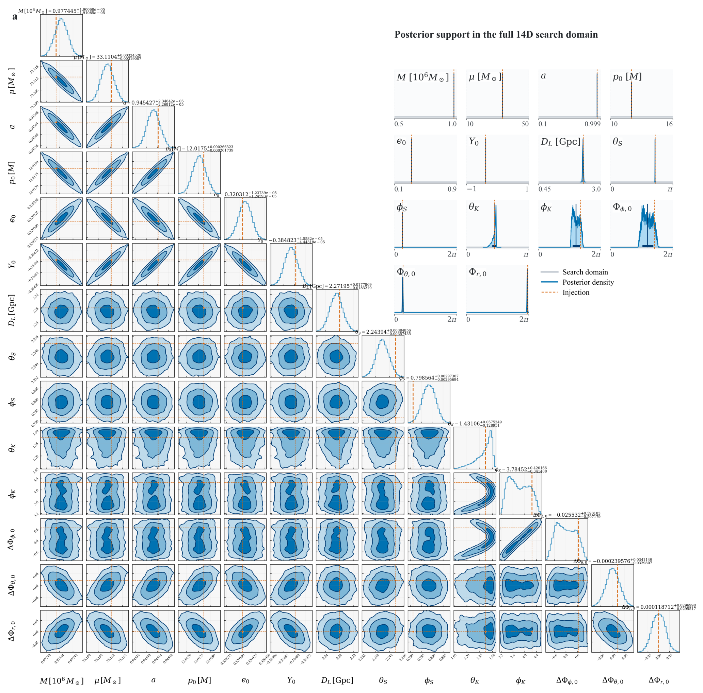
图注：一年LISA—Taiji模拟数据下自旋EMRI的14参数后验。左下为精确双探测器似然、显式采样距离的并行温度MCMC一维和二维边缘分布；二维轮廓包围39%、86%、99%概率，标签给中位数与中心68%区间。相位相对圆均值表示。右上在完整先验灰带中展示各一维边缘的收缩；橙虚线为抽样后加入的注入值，不用于采样。
怎么看这张图：先看内禀量相关的细长方向，再看自旋方向与方位相位的宽退化。所有区间来自一个被跟踪自旋扇区的14维链；链提前停止、未遍历其余扇区，不能把角图当作已充分收敛的全局后验。 核心联合后验与相关退化。
来源与置信度：arXiv PDF；source verified；https://arxiv.org/pdf/2611.31916#page=3
图4
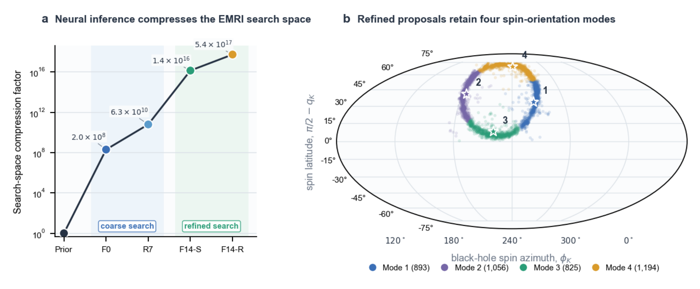
图注：神经阶段缩小搜索域并揭示自旋方向环。a：完整14参数先验盒与F0、R7、高分辨模拟域F14-S和交给精确似然的F14-R之体积比。b：3968个在自旋边界内的高分辨提议在黄道坐标的Mollweide投影，围绕视线形成环；k均值分成893、1056、825和1194个提议的四个扇区，星号为中心。精确阶段只继续第三扇区。
怎么看这张图：左图是坐标盒体积收缩，不是后验概率或信息量；右图显示未跟踪模态为何影响结论。不要把第三扇区内多盆地抽样称作全环完成。 直接揭示方法收益及全局覆盖边界。
来源与置信度：arXiv PDF；source verified；https://arxiv.org/pdf/2611.31916#page=7
图5
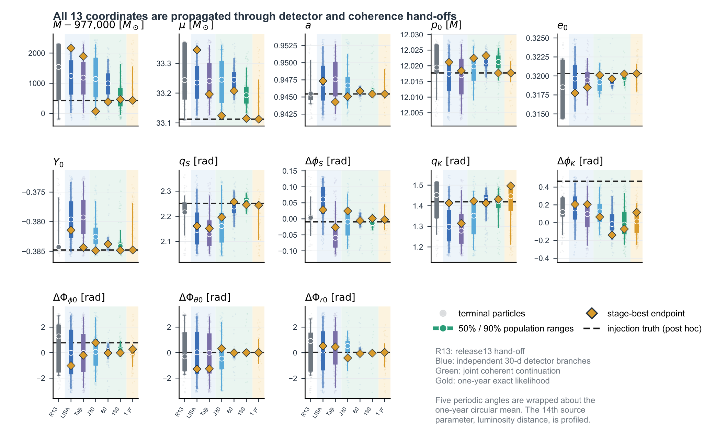
图注：精确似然搜索在13个采样参数中的末态粒子群。从13维细化R13，经LISA与Taiji各自30天分支（蓝色）、联合30/60/180天（绿色）到一年（金色）；粗细误差棒分别表示群体中心50%和90%范围，菱形为阶段最佳点，虚线为分析后加入的注入真值。五个周期角相对一年圆均值表示，距离作剖面化；为清晰省略360天阶段。
怎么看这张图：沿横向阶段看内禀量逐步收紧，同时注意自旋方向未必单调收缩。这些是搜索粒子群范围，不能与图1最终显式距离后验区间混用。 展示跨探测器筛选及相干延时机制。
来源与置信度：arXiv PDF；source verified；https://arxiv.org/pdf/2611.31916#page=8
强相关工作
Barack与Cutler的参数精度工作、Babak等LISA EMRI科学预报建立了长期相位可精密称量黑洞的动机；Ryan的多极矩研究解释轨道频率为何携带强场时空信息。本文进步是从宽先验实际搜索到高精度后验，而不是仅在已知源附近预报。但AAK本身是Kerr近似信号，若要检验时空必须把偏离多极矩及环境参数一起采样。
扩展表1比较Strub等无自旋11参数分析、Cole等截断边缘神经比率估计及作者此前60天自旋源四内禀参数研究。最近14参数半年的搜索多给点估计，不等于联合协方差和可信区间。本文加入一年双探测器和最终14维联合采样，但不同研究信噪比、波形与时长不同，不能把误差之比单独归因于新算法。神经样条流与Chua—Vallisneri的引力波神经后验研究提供可复用工具，最终可信度仍取决于物理模型、边界与采样验证。
同一事件 / 同类源线索：
相似工作：
（未提供）
基础理论 / 方法工作：
- https://doi.org/10.1103/PhysRevD.52.5707
- https://doi.org/10.1103/PhysRevD.69.082005
- https://doi.org/10.1103/PhysRevD.95.103012
- https://arxiv.org/abs/1906.04032
相反观点 / 张力线索：
（未提供）
相关简报
1. Plasma Heating by Magnetic Reconnection and Alfven Waves in Collisionless Shocks
- 来源：arXiv / astro-ph.HE
- 链接：https://arxiv.org/abs/2611.32287
- 作者：Masahiro Hoshino, Shuichi Matsukiyo, Takanobu Amano
- 公告 / 来源日期：2026-11-25
- 阅读层级：相关简报
- 评分：novelty 8/10，importance 7/10，relevance 9/10，final 9.00/10
- 推荐理由：PIC将激波下游重联与离子优先加热连接，机制相关性有价值，尚须区别相关证据与因果分离。
中文题目：平行无碰撞激波中，阿尔芬波电流片如何改变离子与电子的加热分配
问题、方法与结论：激波守恒关系只能给出总热量，不能决定离子和电子各分多少。作者用质量比为100的粒子网格模拟，对比一维与二维平行激波：反射离子先激发阿尔芬波，波进入下游后被压缩，形成电流片。在上游四速度为0.4、磁化参数为0.0158的例子中，二维波振幅在约20个离子惯性长度内衰减，一维则可保持超过50个；指定下游区的电子/离子动能比从一维约0.7降至二维约0.4。二维X形磁场附近的正能量耗散与高离子温度相伴，支持磁重联参与离子加热。
意义与贡献：贡献是把波的产生、压缩、电流片形成与粒子能量分配连成可检查的动力学证据链，并通过横向盒尺寸与磁化参数扫描检验趋势。弱磁化、较高阿尔芬马赫数时，一维二维差异变小：相对背景很强的扰动仍可能只占流动能量的很小部分，因此不能仅凭湍流外观推断重联加热的重要性。
可借鉴之处：可借鉴的是同时比较磁场拓扑、电子参考系的电场耗散及温度张量平均值，并用维数和盒尺寸作对照。只有X点并不足以识别正在加热的重联区；文中也找到没有正耗散或热离子产生的X点。这种联合诊断适合检验激波下游能量预算。
局限与关注点：结果对高能源激波的电子注入与热化建模有启发，但本文未计算非热粒子能谱和伽马射线辐射。重联证据属于相关性诊断，不能解释全部维数差异；真实质量比、三维湍流和斜激波尚待检验。作者明确指出普通超新星遗迹激波更慢而马赫数更高，不能直接套用这里较快流速、较低马赫数的加热效率。
图9
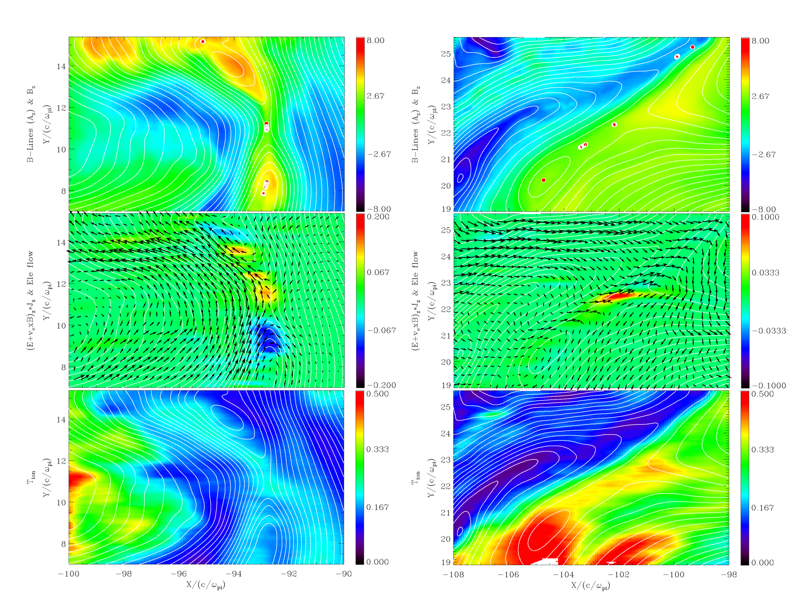
图注：激波下游两个X形磁场区域的局部快照。上排白线为平面内磁力线，颜色为垂直磁场分量与背景场之比；中排黑箭头为平面内电子流速，颜色为电子参考系电场对应的耗散量；下排颜色为离子温度并叠加磁力线。左右列分别放大图8中以离子惯性长度归一化的约（−93，11）与（−102，22.5）区域。
怎么看这张图：把三排按同一位置对齐：正耗散和高离子温度在部分X点及其外流附近共同出现，支持局部磁能转为离子能；并非每个X点都有该组合，所以图形本身不能代替能量转换诊断。 同时呈现拓扑、耗散与离子加热，支撑核心机制并保留因果诊断边界。
来源与置信度：arXiv HTML；source verified；https://arxiv.org/html/2611.32287v1/Fig_currentsheet2_v3.png
2. Magnetar driven Dainotti relation with up to 56\% reduced uncertainties: probing the Expansion History of the Universe
- 来源：arXiv / astro-ph.HE
- 链接：https://arxiv.org/abs/2611.31273
- 作者：Konstantinos F. Dialektopoulos, Aleksander Łukasz Lenart, Maria Giovanna Dainotti, Jackson Levi Said, Nissim Fraija
- 公告 / 来源日期：2026-11-25
- 阅读层级：相关简报
- 评分：novelty 7/10，importance 7/10，relevance 8/10，final 8.35/10
- 推荐理由：磁星物理筛选减小散布有用，宇宙学约束主要依赖联合锚定；小样本选择偏差需核验。
中文题目：用磁星模型选样和联合光变拟合收紧伽马暴平台关系
问题、方法与结论：伽马暴X射线平台的光度与持续时间存在反相关，可作高红移距离指标，但物理混合与稀疏光变会增大散度。作者对274个有平台和红移的暴比较理想磁偶极自转减速模型与经验光变模型，以AIC相对权重至少0.95筛出23个事件，再同时拟合各暴平台参数及总体光度—时间关系。与50个按光变质量筛选的platinum样本相比，磁星候选样本的内禀对数散度从约0.59降到约0.35；超新星锚定的新联合拟合给出约0.26。
意义与贡献：主要贡献是把物理选样与测量层面的联合推断结合：相关关系可约束数据缺口造成的多解，光度和平台时长的协方差则随采样传播。较小散度说明所选子样本更适合标准化，但AIC只比较指定的两个模型，并不直接证明中央引擎就是磁星；总体斜率约−1.3也并非最简单的−1标度。
可借鉴之处：该方法对瞬变群体分析的参考价值在于，让每个源的光变参数参与同一次推断，并只给相关似然自然统计权重，避免人为重复放大总体关系。作者还比较32个宇宙计时器和3714个Ia型超新星两类锚定，并测试红移演化项；这些检验帮助区分样本标准化改善与外部距离尺度提供的信息。
局限与关注点：全联合结果的哈勃常数为69.45±0.32千米每秒每兆秒差距，但精度主要由超新星和计时器锚定，不能归功于23个伽马暴，更不表示已解决哈勃张力。样本很小，计时器采用对角协方差而未纳入完整相关系统误差。表1中超新星锚定的旧、新方法散度也并非完全相同，故应按具体运行报告数值，不能照搬正文“两方法完全不变”的概括。
图4
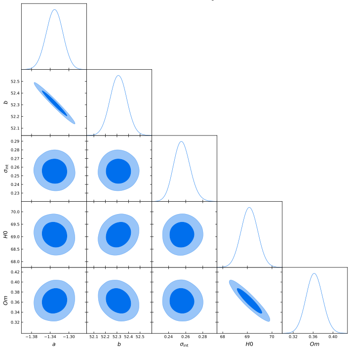
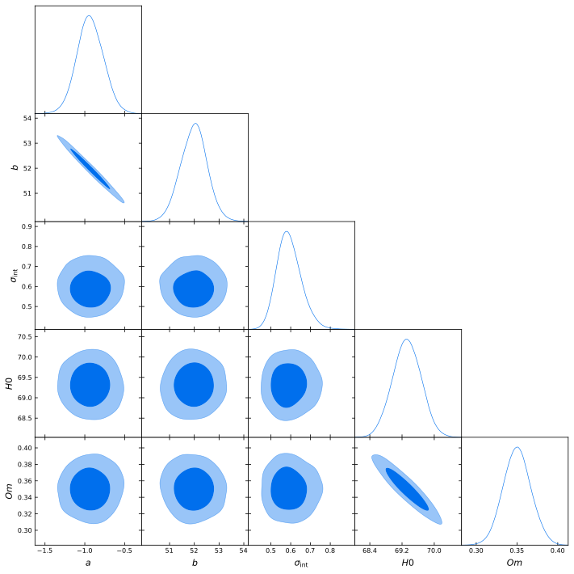
图注：Ia型超新星与伽马暴联合标定的参数后验。原图左右面板在此依次展示：第一面板为23个磁星模型候选事件，第二面板为50个platinum事件；参数包括光度—平台时长关系的斜率、截距、内禀散度、哈勃常数和物质密度参数，轮廓为68%与95%置信区域。磁星候选样本使用同时拟合光变和总体关系的新似然。
怎么看这张图：比较两组关系斜率和内禀散度，再看宇宙学参数：前者随选样明显变化，后者保持相近，说明距离尺度主要由共同超新星锚定决定。不要把磁星样本更窄的关系直接等同为独立宇宙学精度突破。 对应物理选样降低散度及锚定主导宇宙学的双重结论。
来源与置信度：arXiv HTML；source verified；https://arxiv.org/html/2611.31273v1/lc_sn_cosmo.svg；https://arxiv.org/html/2611.31273v1/platinum_baseline_calib_sn_grb.svg
3. Super-Eddington Neutron Star Accretion Columns: Comparing GRRMHD Simulations with Spectral Models
- 来源：arXiv / astro-ph.HE
- 链接：https://arxiv.org/abs/2611.32865
- 作者：Fatemeh Kayanikhoo, Marios Kouzis
- 公告 / 来源日期：2026-11-25
- 阅读层级：相关简报
- 评分：novelty 7/10，importance 7/10，relevance 8/10，final 8.35/10
- 推荐理由：四个轴对称吸积柱模拟对照谱模型，参数与维度范围有限。
中文题目：超爱丁顿中子星吸积柱：模拟几何与能谱拟合为何只部分一致
问题、方法与结论：作者用Koral进行四组轴对称广义相对论辐射磁流体模拟，考察表面偶极磁场为3×10¹⁰至10¹¹高斯的中子星吸积柱。沿磁场追踪密度较高的漏斗，并用表面附近辐射能密度峰的半高全宽定义柱宽，以速度梯度最大处估计强减速区。四组模型中角宽由0.141降至0.067弧度，特征激波高度由1.95增至3.89千米。把南北两极的环形足迹合并成等面积圆柱，得到3.2—5.2千米的等效半径，其中三组与超爱丁顿Be/X射线双星的bwcycl能谱拟合范围上端重叠。
意义与贡献：实际吸积柱可以是两条薄的环形漏斗，而常用能谱模型将它近似为单根实心圆柱。等面积转换说明较大的拟合柱半径未必代表一个真正宽大的极区。另一方面，模拟的流动开始减速高度只有约0.42—0.54个星半径，明显低于该能谱模型的至少约2个星半径，暴露了模型上边界和速度参数化的重要性。
可借鉴之处：值得借鉴的是先统一可比较量，再判断模拟与观测是否一致：柱的等效面积应计入两个磁极，激波高度、声速点高度和速度最大值高度也不能互换。作者分别提取这些量，并指出能谱模型强制速度在柱顶达到自由落体值，可能把柱顶推到较高位置；这提供了检验谱模型几何偏差的具体诊断。
局限与关注点：这对超亮X射线脉冲星和超爱丁顿双星能谱解释有用，但并非对某一实测系统的联合拟合。模拟吸积率约6.7—9.5×10¹⁹克每秒，磁场明显弱于被比较源的拟合值，且四模型的吸积率也随磁场同时变化，不能把几何趋势全归因于磁场。计算为轴对称、M1辐射闭合且采用指定表面反照率；更强磁场所需的磁性不透明度还待加入。侧向平均光度也不是观测的各向同性等效光度。
图2
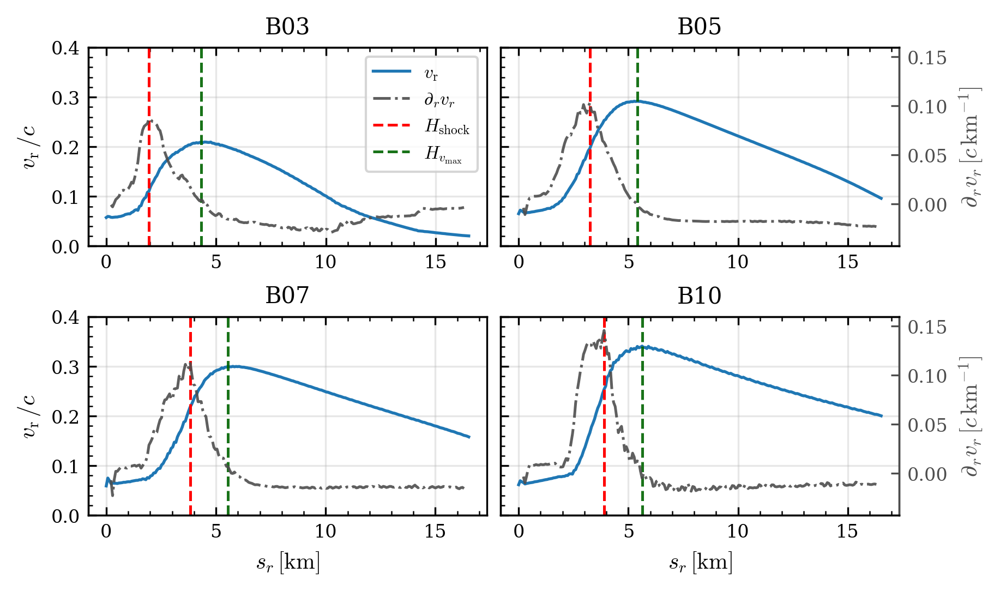
图注：沿追踪的吸积柱路径测得的径向内流速度（蓝实线）及其径向梯度（灰色点划线）。红虚线标出速度正梯度最大处定义的特征辐射激波高度；绿虚线标出内流速度最大值所在高度。不同面板对应四组表面磁场强度不同的模拟。横轴为从星面起沿追踪路径的距离，单位千米；左轴为内流速度与光速之比，右轴为速度梯度，单位为光速每千米。
怎么看这张图：先看绿线附近流动何时开始减速，再看红线附近哪里减速最强，两者不是同一柱高。能谱模型中柱顶的定义更接近前者，因此仅比较一个“高度”数字会产生误导；这些还是平均流动的特征位置。 直接支持模拟如何定义/测量柱高，避免仅凭参数区不同的观测对照宣称吻合。
来源与置信度：arXiv HTML；source verified；https://arxiv.org/html/2611.32865v1/figures/velocityprofile.png
4. Self-arresting vortex rearrangements in pinned spinning-down superfluids
- 来源：arXiv / astro-ph.HE
- 链接：https://arxiv.org/abs/2611.33103
- 作者：Anantharaman Sekharipuram Viswanathan, Dipankar Bhattacharya
- 公告 / 来源日期：2026-11-25
- 阅读层级：相关简报
- 评分：novelty 8/10，importance 7/10，relevance 7/10，final 8.30/10
- 推荐理由：涡旋退出自停止机制有明确理论增量，但容器到脉冲星推广仍有限。
中文题目：钉扎超流体中的涡旋迁移为何会自行停止
问题、方法与结论：脉冲星自转突增常被解释为内部超流体向外层转移角动量，但一次涡旋集体迁移如何结束仍不清楚。作者在圆柱容器、直线涡旋和均匀钉扎条件下推导流场，再以5000个点涡旋和10万个钉扎点模拟检验。靠近容器壁的小片涡旋空缺须达到最小张角，才会推动更深处涡旋脱钉；空缺增长又削弱壁附近切向流，直至外向漂移停止并发生重新钉扎。因此事件可因自身改变流场而终止，而不只是等待整体角速度差被耗尽。
意义与贡献：该模型把触发、外迁和终止联系到同一速度场，得到由临界脱钉速度、容器半径和初始转速主导的张角与深度尺度。它提示并非所有集体涡旋事件都应按无特征尺度的雪崩处理。三组钉扎强度模拟总体支持尺度估计，但最强钉扎例子的预测相对自转突增为0.082、模拟为0.049，定量吻合并不处处精确。
可借鉴之处：可借鉴的是将缺失涡旋等效为反向涡旋区，再用镜像涡旋满足容器壁的边界条件，同时追踪空缺尖端与边界的流速。前者控制继续脱钉，后者控制能否真正离开超流体；区分这两个位置，能解释为什么内部仍有重排而角动量输出已显著减弱。
局限与关注点：把代表性参数代入后，作者得到蟹状星云和Vela脉冲星约10⁻¹⁰与10⁻⁵的相对自转突增，只与常见观测量级粗略接近，不能视为逐次跃变拟合。模型仅研究初始事件，忽略球形结构、径向分层、非均匀钉扎及三维涡旋湍流，速率也依赖耗散和外部减速条件。重排可能产生连续引力波的提议尚未给出波形或可探测幅度。
图2
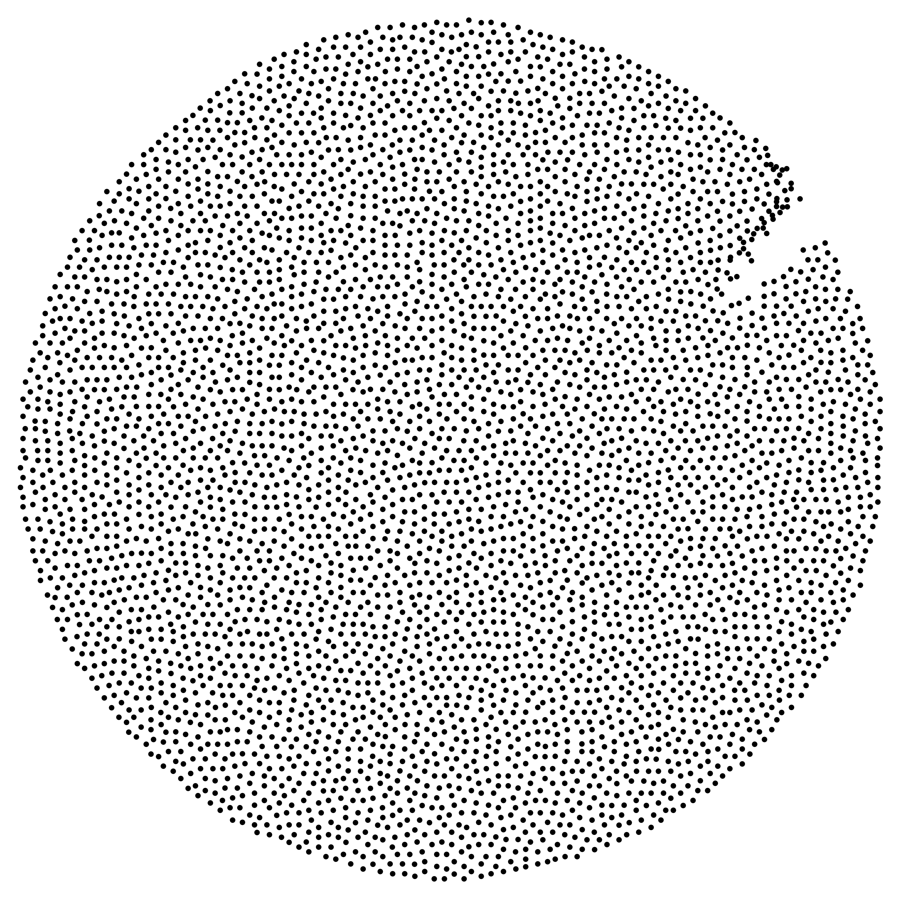
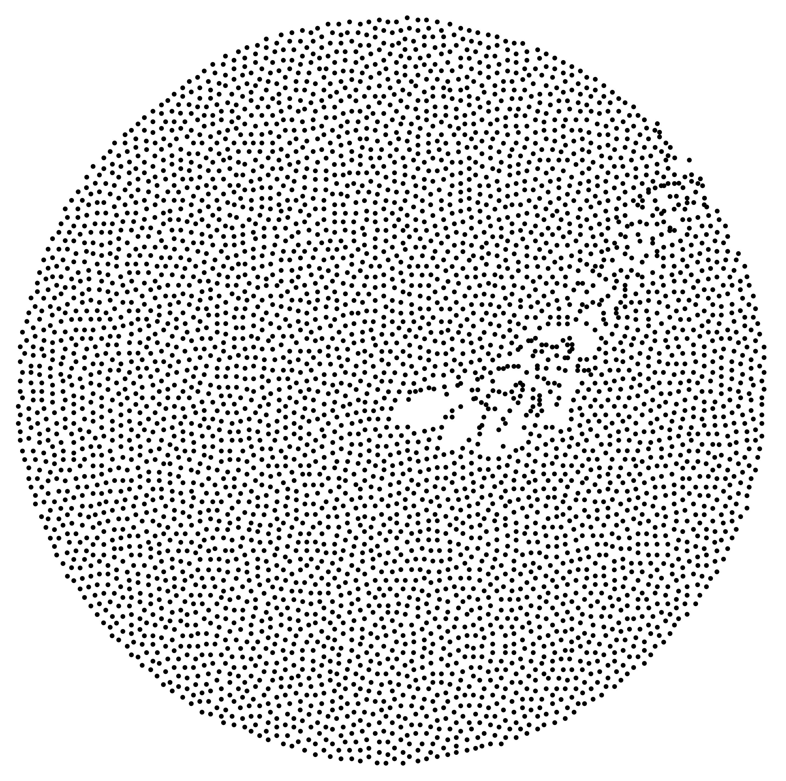
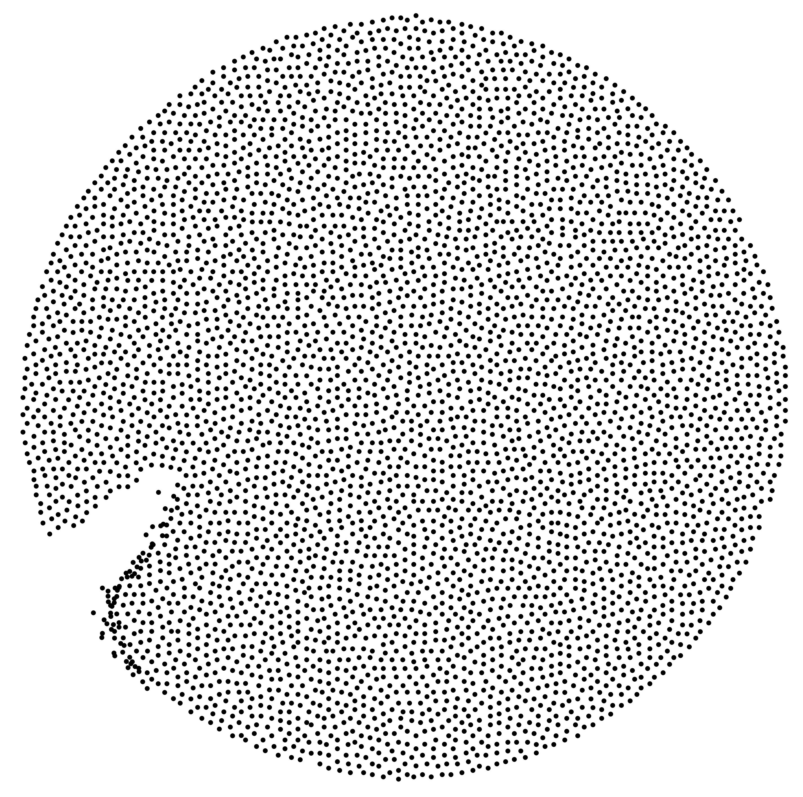
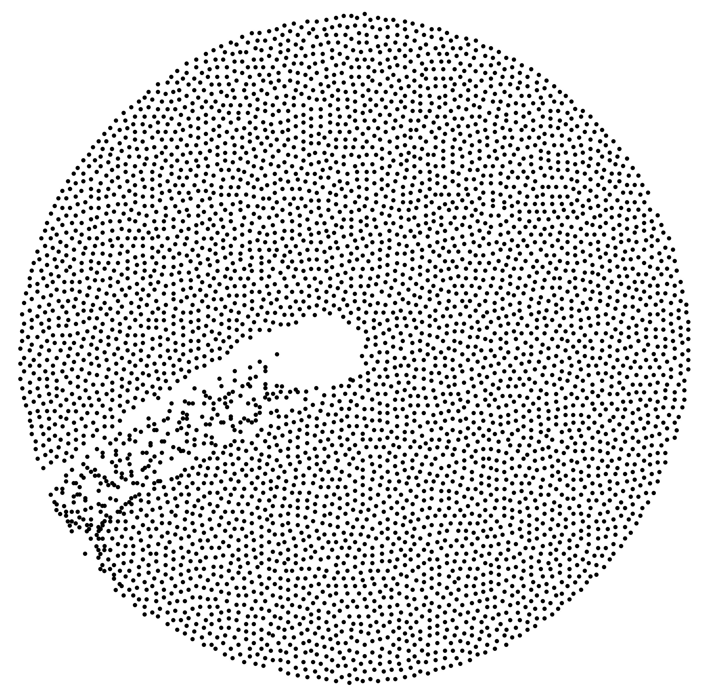
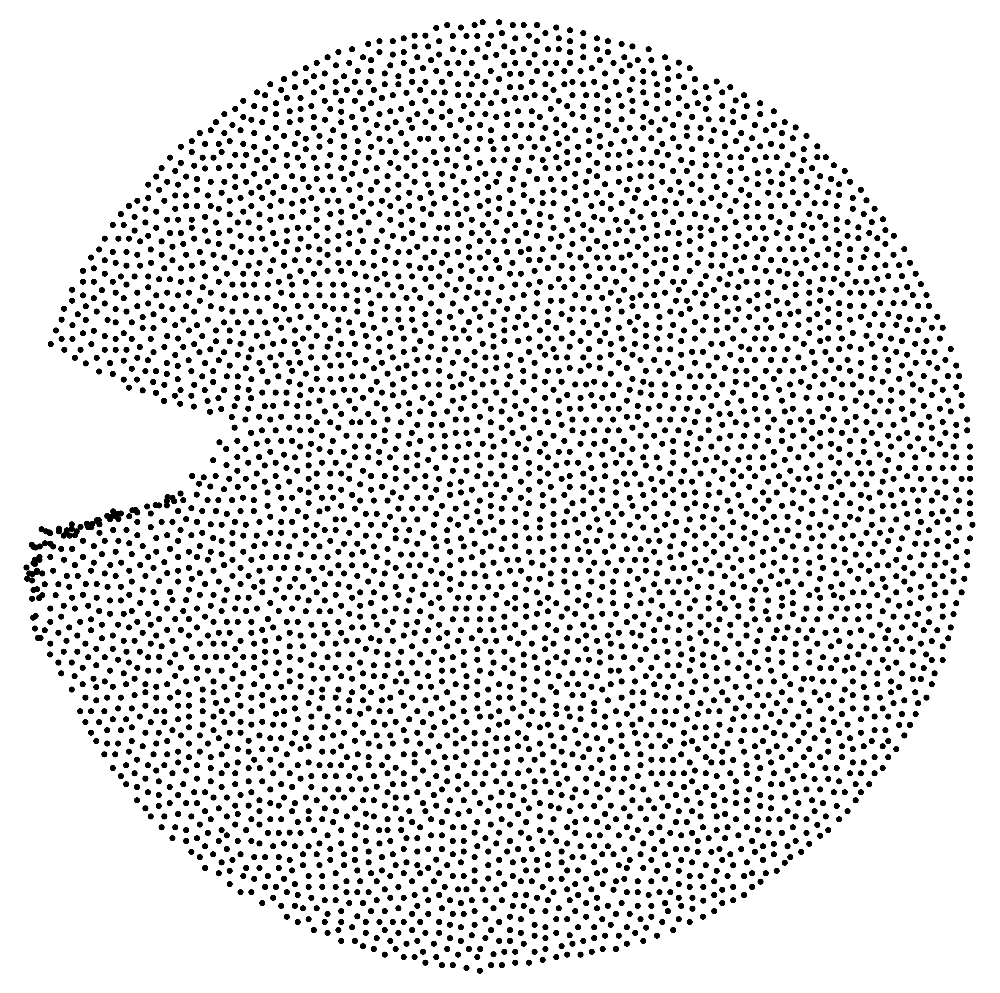
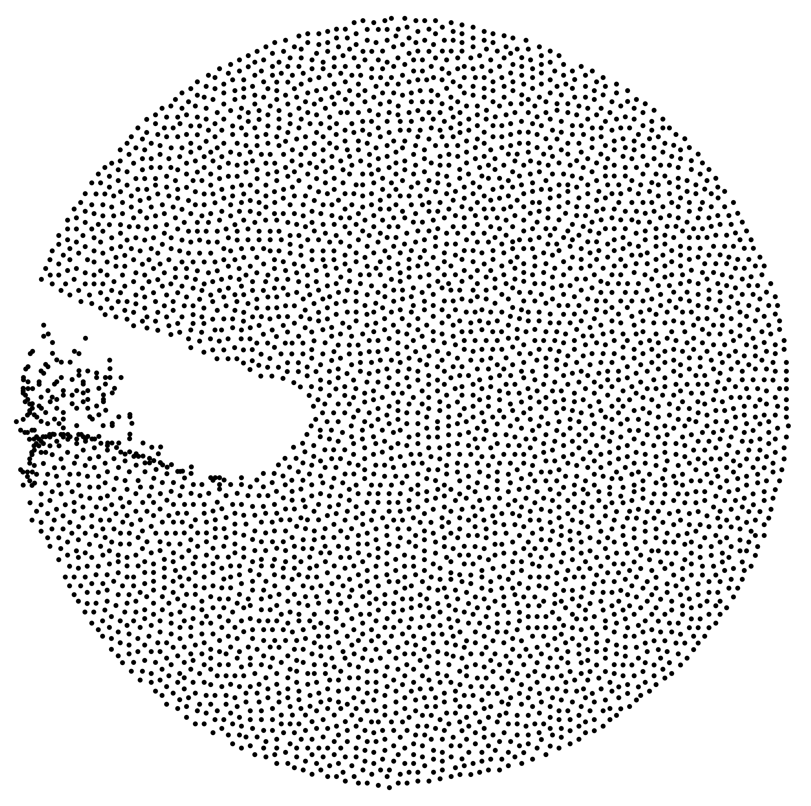
图注：点涡旋模拟中涡旋阵列的状态。六个面板按原图行序依次展示：临界脱钉速度30、60、90各对应一对面板，前一幅为首次集体外迁结束、后一幅为整个重排事件结束。黑点表示涡旋，钉扎点未画出；容器半径均为10，采用文中无量纲单位。外迁结束时空缺张角和深度随临界速度增大，而整个事件后受扰动区域的总深度呈减小趋势。
怎么看这张图：比较每一对面板：外迁停止后阵列仍会在内部重排和重新填充。再比较三组钉扎强度，两类“深度”并不相同，不能用事件结束后的全部受扰动范围直接代入外迁阶段的角动量估算。 展示自终止后的重排，以及分析尺度与模拟可观察结构对应。
来源与置信度：arXiv HTML；source verified；https://arxiv.org/html/2611.33103v1/figs/array_exodusend_set16.png；https://arxiv.org/html/2611.33103v1/figs/array_glitchend_set16.png；https://arxiv.org/html/2611.33103v1/figs/array_exodusend_set17.png；https://arxiv.org/html/2611.33103v1/figs/array_glitchend_set17.png；https://arxiv.org/html/2611.33103v1/figs/array_exodusend_set18.png；https://arxiv.org/html/2611.33103v1/figs/array_glitchend_set18.png
5. Critical Eddington luminosity and photon cooling of compact spherical stars
- 来源：arXiv / astro-ph.HE
- 链接：https://arxiv.org/abs/2611.32629
- 作者：Tisha Desai, Jiří Horák, Włodek Kluźniak, Sukalpa Kundu
- 公告 / 来源日期：2026-11-25
- 阅读层级：相关简报
- 评分：novelty 6/10，importance 7/10，relevance 8/10，final 8.05/10
- 推荐理由：全文脚注明确正确临界光度前作已有；新增是返回光子动量与非局域稳定性澄清，后者仅定性。保留科学分由既定门槛重算。
中文题目：返回表面的光子如何修正超致密星的爱丁顿光度
问题、方法与结论：若一个有物质表面的天体位于自身光子球以内，斜向发出的部分光子会被引力弯回表面。作者在施瓦西时空中对球对称、各向同性发射作解析光线追踪，重新计算辐射力与引力平衡。返回光子不只是减少远方收到的辐射，还带回向内动量，因此维持平衡需要更大的表面发射光度。在光子返回时间内保持稳态时，这一增大恰好抵消逃逸锥对临界光度的额外削弱，远方看到的临界光度在光子球内外仍服从同一个引力红移表达式。
意义与贡献：这澄清了固定表面发射功率与临界平衡功率的区别：前者确实因部分光子返回而更暗，后者必须同时重算力平衡，不能只乘逃逸比例。作者指出部分X射线暴文献遗漏了这个反馈，也明确承认正确的临界结果曾在2006年的另一类超致密天体研究中得到；本篇应视为物理澄清与应用讨论，而非首次建立公式。
可借鉴之处：可借鉴的是分别核算发射、返回、净向外和远方光度，并把能量与动量收支放在同一个模型中。光子球以内的平衡依赖别处发射后返回的辐射，因而成为非局域问题；局部表面隆起会改变自身与邻近区域受到的返回通量，为研究光球不均匀与膨胀提供具体扰动思路。
局限与关注点：这些推论不是超致密星已存在的证据，也没有用真实X暴数据测定质量半径。基础结果假定无自转、球面对称、表面各向同性且外部无散射，并要求变化慢于光子返回时间；赤道窄带发射可有不同答案。对称性破缺和不稳定性主要是定性讨论，尚无完整动力学稳定性计算；普通中子星能否进入光子球以内仍受状态方程限制。
图3
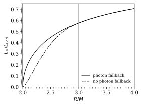
图注：远方观测到的临界光度与通常爱丁顿光度之比随恒星半径变化。实线为计入返回光子对力平衡影响的式（20）；虚线表示只考虑逃逸锥削弱、忽略表面临界光度因此升高时的结果。光子球以内，两种处理给出不同预言。
怎么看这张图：这张图比较的是辐射力恰好平衡引力时的观测光度。不能用实线声称返回光子不会降低固定发射功率下的亮度；平衡条件本身要求表面产生更多向外辐射。 直接区分论文纠正的两种临界光度计算。
来源与置信度：arXiv HTML；source verified；https://arxiv.org/html/2611.32629v1/Linf_LEdd.svg
6. $Φ$asmaNet: A Staged Spectral Token-Refinement Architecture for Fast Gravitational-Wave Signal-to-Noise Ratio Prediction
- 来源：arXiv / astro-ph.HE
- 链接：https://arxiv.org/abs/2611.05309
- 作者：Ioannis Tsioulis, Anastasios Tefas, Nikolaos Stergioulas
- 公告 / 来源日期：2026-11-25
- 阅读层级：相关简报
- 评分：novelty 7/10，importance 7/10，relevance 7/10，final 8.00/10
- 推荐理由：固定单探测器SNR代理精度和速度有用，模型范围受限，按既定加权达到简报门槛；不满足精读科学贡献标准。
中文题目：PhasmaNet：快速预测双黑洞引力波的理想信噪比
问题、方法与结论：引力波群体选择效应计算需要反复评估大量模拟源的可探测性。作者训练约73.2万参数的神经网络，以质量、自旋、倾角和天线投影等11个输入预测单台LIGO Hanford探测器的相位平均最优信噪比。训练标签来自含进动及高阶模的IMRPhenomXPHM波形，固定设计噪声谱；网络通过多层注意力和反馈更新特征。百万样本实验中，留出测试集的平均绝对百分比误差由校准前1.27%降至0.71%；真实信噪比大于8的子集为0.61%。RTX 4080上包含加载、推断与校准的一百万次评估约需8.3秒，对照的16核CPU直接计算为980秒。
意义与贡献：价值在于提供一个计算成本较低的参数到信噪比代理，用于大量注入样本的重复评估，并在共同训练协议下胜过MLP、ResNet与Transformer三个神经基线。这里的“99.29%准确率”实际定义为100减平均百分比误差，不是检测事件的正确率；也不意味着已经从带噪声的真实应变中识别引力波。
可借鉴之处：可借鉴的流程是回归对数信噪比、在训练集估计标准化与权重、只用验证集拟合保序单调校准，再在独立测试集检查残差随信噪比的结构。距离可按反比关系解析缩放；对有红移的源仍须先把源静止系质量转换为探测器系质量，不能把训练质量直接当成宇宙学源质量。
局限与关注点：该工具与多信使群体选择函数计算相关，但目前只验证固定探测器、固定噪声谱与参考距离下小于200的信噪比标签。硬阈值8只是诊断代理，真实噪声、搜索管线及群体参数偏差尚未端到端验证。新增子空间模块在此任务的消融收益很小，其他模块的独立贡献和强非神经基线尚待比较；高质量比与强进动区还继承波形近似自身的系统误差。
图6
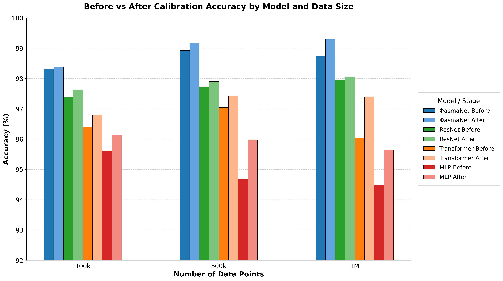
图注：各网络在不同训练数据量下、单调校准前后的性能比较，纵轴为100减平均绝对百分比误差，单位为百分点。所有模型都用验证集拟合同样的保序分段三次Hermite插值校准，再应用到测试集；同一组前后柱形的差异表示这一校准步骤带来的改善。
怎么看这张图：先在相同样本量和相同校准状态下比较网络，再比较同一网络校准前后。指标接近100表示平均相对误差小，并不是事件检出率；图中优势限于共同协议、固定噪声谱与所测神经基线。 把网络本身与后处理校准收益分开，直接支撑方法性能结论。
来源与置信度：arXiv HTML；source verified；https://arxiv.org/html/2611.05309v1/before_after_calibration_bars_shades.png
7. Postimpact evolution of the South Pole–Aitken basin revealed by Chang’e-4 and Chang’e-6
- 来源：Science Advances
- 链接：https://www.science.org/doi/abs/10.1126/sciadv.aeh9798?af=R
- 作者：Yuqi Qian, Wenlei Song, James Head, Mingyu Tian, Zhuang Guo, Harald Hiesinger, Carolyn H. van der Bogert, Le Zhang, Jingyou Chen, Wanfeng Zhang, Ziqing Li, Lingzhi Sun, Xiangsong Wang, Wei-Ran Li, Jiacheng Liu, Nicolas Dauphas, Yi-Gang Xu, Guochun Zhao
- 公告 / 来源日期：2026-11-18
- 阅读层级：相关简报
- 评分：novelty 8/10，importance 8/10，relevance 7/10，final 8.65/10
- 推荐理由：17:00取得作者主页完整PDF并核读，联合两地光谱、样品矿物和喷出物输运区分两类富镁物质，重释盆地年代；4.34Ga为模型综合解释而非本次新直接定年。
中文题目：嫦娥四号与六号联合追溯：南极—艾特肯盆地的两类富镁物质与撞击历史
问题、方法与结论：月球南极—艾特肯（SPA）盆地留下的不同年代岩屑并不一定来自同一次撞击。作者把嫦娥六号表层返回样品的自动矿物分析、嫦娥四号与六号原位近红外光谱、轨道矿物图以及撞击喷出物输运模型联系起来，先问岩屑从哪里来，再解释它记录哪次事件。超过百万个候选撞击坑经距离、喷出厚度和年龄筛查，留下67个晚于六号着陆区玄武岩的来源坑；两套年龄估计给出约54%–61%的本地月海物质和约38%–46%的非月海物质。Finsen送到四号的中等富镁物质较符合撞击熔融层分异，Chaffee S送到六号的高度富镁物质则较符合镁质岩套侵入岩。由这条来源链，作者倾向把约42亿年前的记录归于Apollo盆地，把约38.7亿年前的记录归于Orientale，并支持SPA约43.4亿年前形成的解释。
意义与贡献：关键进展是把“富镁”拆成两种成因，而非把所有高镁颗粒都当成月幔或同一熔融层。六号非月海物质的来源为同位素年龄赋予地质语境，使样品、遥感和撞击地层能相互检验；但43.4亿年是结合既有定年的综合解释，不是本文重新直接测出的盆地年龄。
可借鉴之处：可借鉴的是来源追踪再做历史反演：利用喷出物厚度随距离衰减、撞击时间先后和表层翻耕深度预测混合比例，再用矿物组成与光谱吸收带中心检验。原始喷出物与裹挟的当地物质必须分开，年龄年轻/年老两组方案分别传播；吸收带中心的矿物判别也须统一平滑和连续谱去除，避免不同仪器或风化程度制造差异。
局限与关注点：本篇提供月球早期演化的重要新证据链，不必强接高能天文。需关注两处局部着陆区能否代表整个盆地，以及米级原位、百米级轨道与微米级颗粒测量的尺度差异。4.25与4.16–4.18十亿年的Apollo候选年龄仍有争议；细粒苏长岩的老年龄群也可来自不同熔融层，需要热演化模型区分。补充材料未随作者PDF取得，未独立复现全部坑目录和光谱反演。正文结果段的辉石颗粒总数41695与方法/图6实际筛后40908不同，采用后者说明质量筛选后的成分样本。
Fig7
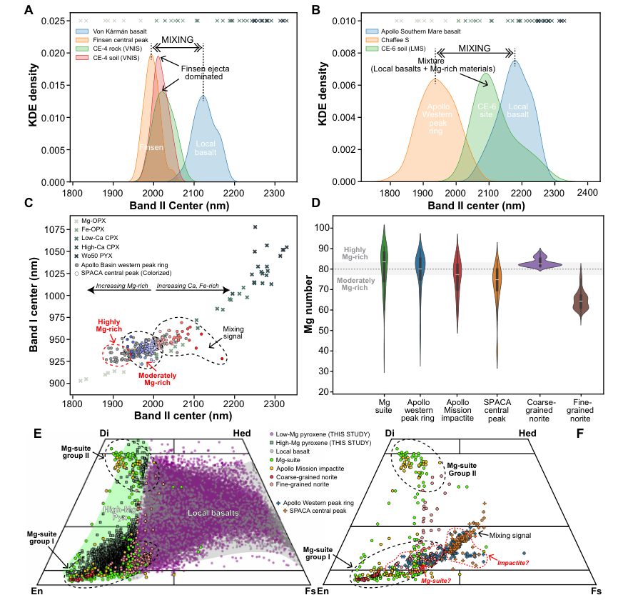
图注：图7｜两着陆点及源区矿物组成比较。A、B为2微米吸收带中心（横轴nm）的核密度分布，分别比较四号和六号土壤、当地玄武岩及候选来源；四号接近Finsen，六号处于本地玄武岩与Chaffee S之间。C比较两吸收带中心，D比较Mg数，E、F为辉石成分四边形；样品和轨道反演分别指向中等与高度富镁组。
怎么看这张图：先读A、B看混合，再读C–F看成分是否支持不同来源；相似成分并非单独确定成因的充分证据。 直接支持成分区分和来源—年代解释
来源与置信度：author-hosted published PDF；source verified；https://yuqiqian.com/wp-content/uploads/2026/11/2026_qian_postimpact-evolution-of-the-south-polee28093aitken-basin-revealed-by-change-4-and-change-6.pdf#page=10
Fig9
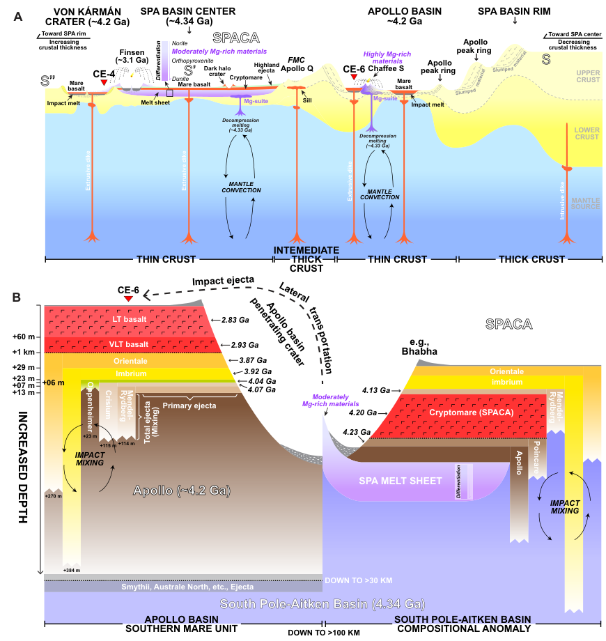
图注：图9｜作者提出的SPA地质历史。A为盆地剖面：熔融层分异产生中等富镁物质，岩浆侵入形成高度富镁岩套，随后撞击将其输送到两着陆区。B为盆地撞击先后与喷出厚度示意，横向矩形表示原始喷出物，纵向矩形表示挖掘并混入的当地物质。Orientale与Imbrium原始喷出层约29.3和22.5米，模型挖掘深度约270和384米；年龄和层序属于作者的综合解释。
怎么看这张图：这是一幅模型综合图，不是地下结构直接成像；沿箭头追踪再搬运，避免把一颗岩屑的年龄直接等同于着陆区或SPA形成时间。 直接支持成分区分和来源—年代解释
来源与置信度：author-hosted published PDF；source verified；https://yuqiqian.com/wp-content/uploads/2026/11/2026_qian_postimpact-evolution-of-the-south-polee28093aitken-basin-revealed-by-change-4-and-change-6.pdf#page=15
说明
评分由 LLM 给出初评，再由本地阈值策略过滤；IACT、TeV 伽马射线和高能中微子天文学按重点方向处理。